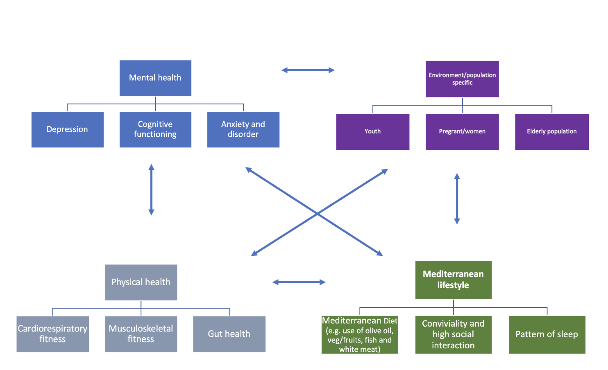
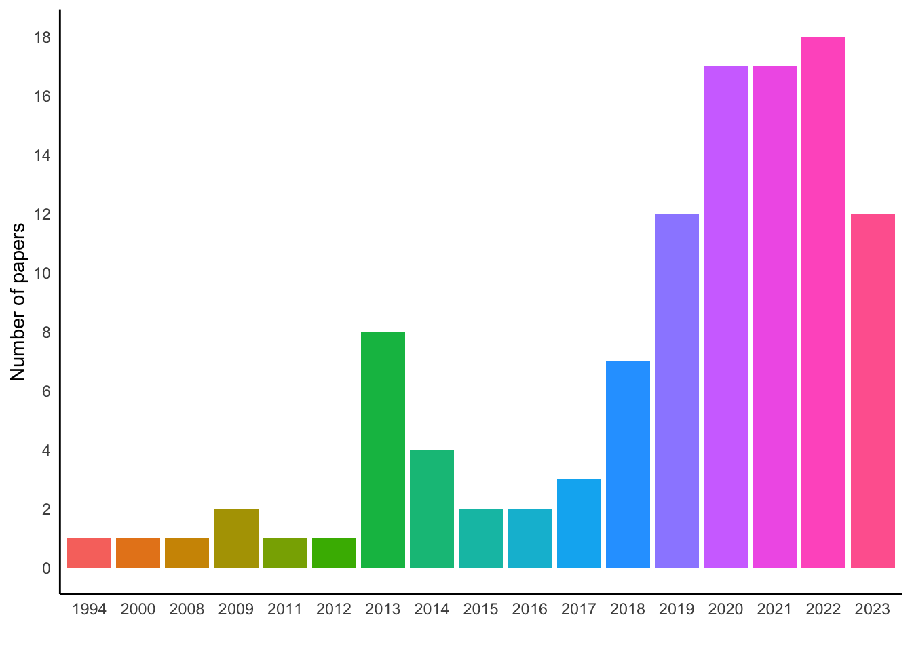
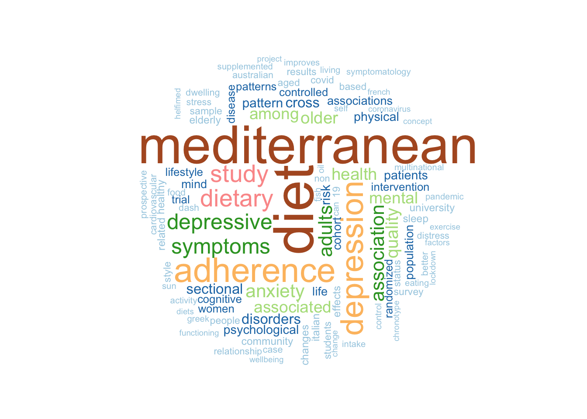
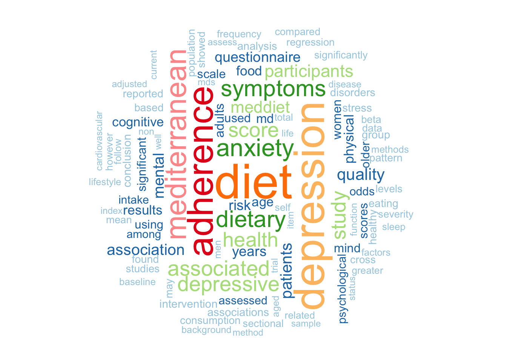
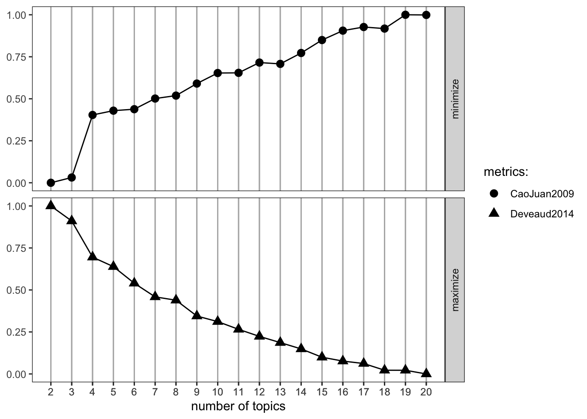
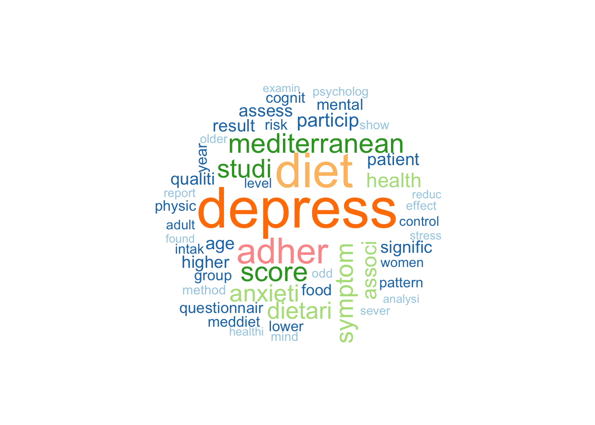
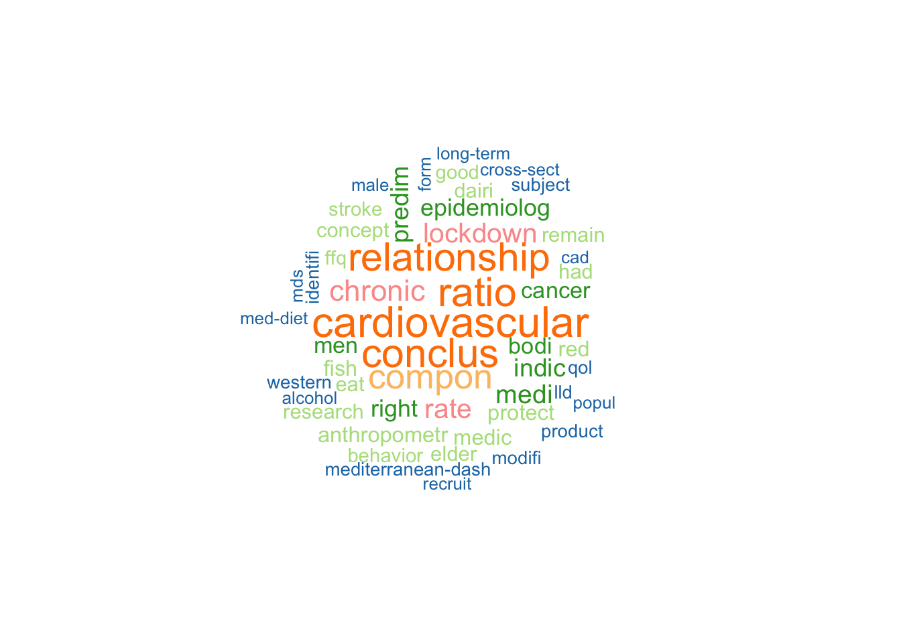
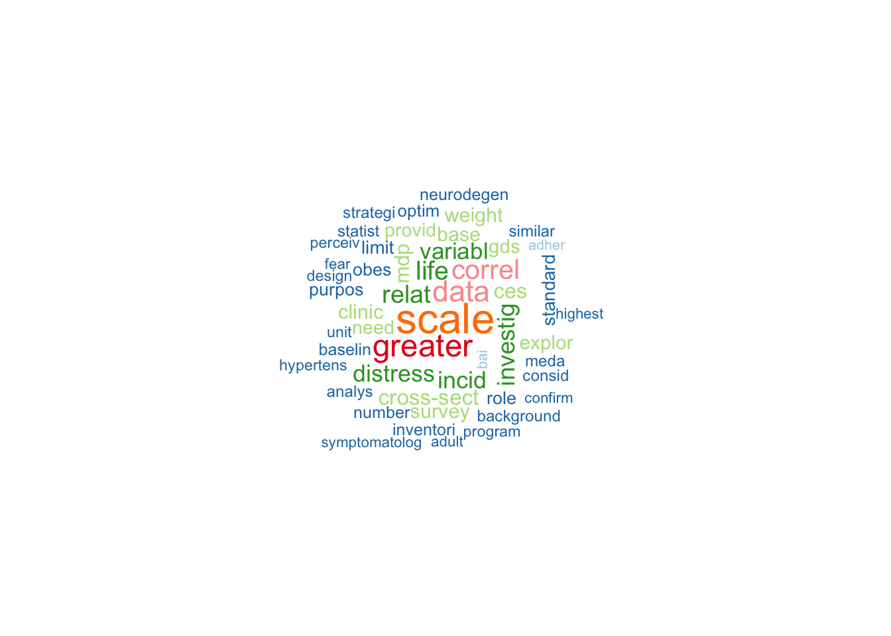
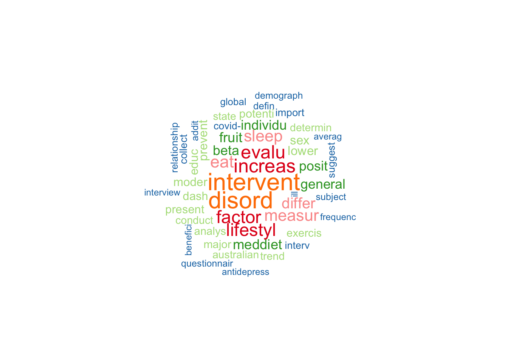
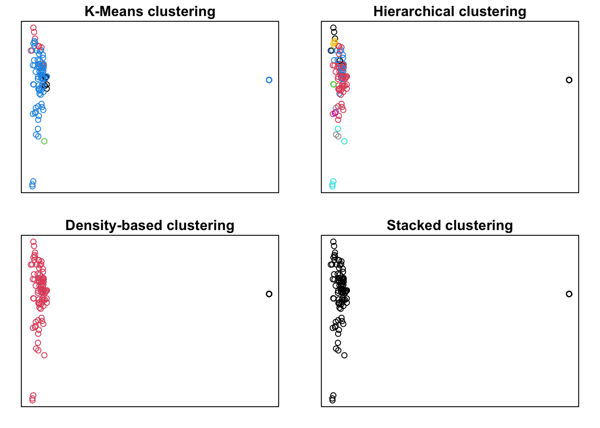

Med lifestyle and mental health
Understanding the link between ML and MH
’ Components of MidLifStyle as identified in
Diolintzi, A., Panagiotakos, D., & Sidossis, L. (2019). From Mediterranean diet to Mediterranean lifestyle: A narrative review. Public Health Nutrition, 22(14), 2703-2713. doi:10.1017/S1368980019000612
Result: despite that features of the ML could contribute to other wellness dimensions, there are no studies exploring the effect this healthy lifestyle could confer to them.
This is underresearched topic and there are limited studies available to isolate the direct effect of MidLifeStyle on MH. However, the following important points have been documented

Publication years

# A tibble: 18 × 2
published_year n
<dbl> <int>
1 1994 1
2 2000 1
3 2008 1
4 2009 2
5 2011 1
6 2012 1
7 2013 8
8 2014 4
9 2015 2
10 2016 2
11 2017 3
12 2018 7
13 2019 12
14 2020 17
15 2021 17
16 2022 18
17 2023 12
18 NA 1Wordclouds:
based on titles

Based on abstract

Text network
To understand the concepts behind MidLifStyle and MH and connections between we conducted network analysis of the collected papers.
The analysis was done using the igraph package which uses the graph theory . as the foundation.
The located references were analysed to extract the abstracts and preprocess the text of the abstracts. In particular, we employed traditional text cleaning steps (such as convertion to lower case, removal of stop words, etc.), stemming procedure to identify word stems and reduce repetitions in the data and tokenization of the data. Given the use of network analysis, the focus was on identifying and selecting nouns and compound nouns for analysis.
Such approach is informed by prior literature (e.g. Rule, Cointet, and Bearman 2015), that suggests that creating text networks based on only nouns or noun phrases provides better results for mapping the topical content of a text than other parts of speech, such as verbs or adjectives.
The next step included converting the text to a dataframe where individual words were extracted and assigned to the grouping factor. At this initial stage of exploration, the groups were set at the title level. Further analysis using clustering of documents and identification of distinctive themes that the documents (=papers) belong to would allow group documents across theme to develop a network explaining the relationships between individual topics within the MidLifStyle-MH continuum and allocation of specific papers to each subdomain. Tokenization of the abstracts allowed create term-document matrix to create nodes (documents), clusters (grouping of documents)
The matrix allowed establishing co-occurrance of words. For the network analysis the tokenized words and document titles was specified as nodes sets to produce a two-mode network.
Based on the developed dataframe the study generated a weighted adjacency matrix, which is a square matrix where the rows and columns correspond to the groups (=documents here or topics later). The cells of the adjacency matrix are the transposed to produce the [term-frequency inverse-document frequency] (TFIDF) (https://en.wikipedia.org/wiki/Tf%E2%80%93idf) for overlapping terms between documents. The procedure described in Bail (2016).
On the next step, we used the TFIDF matrix to generate the network diagram where nodes are colored by their cluster or modularity class. As in many other cases, text networks is very dense (i.e. networks include a very large number of edges because most documents share at least one word). Visualizing text networks therefore creates inherent challenges due to cluttering and such dense networks. To remedy this, we employed a “network backbone” technique to delete edges using a disparity filter algorithm to trim edges that are not informative. We used the default parameter recommended in the literature where a tuning parameter alpha.
View text_network.html
To identify latent themes across texts we group documents according to their similarity within the text networks. We employed the Louvain community detection algorithm to automatically convert the edge weights in the developed graph and determine the number of clusters within the provided network. This resulted in assignment of each document to the cluster or “modularity” class to which each document or word has been assigned.
This is a snippets of the assignment:
group
1 'Effectiveness of a remote nutritional intervention to increase the adherence to the Mediterranean diet among recovered depression patients'
2 ’Dea. A Mediterranean-style dietary intervention supplemented with fish oil improves diet quality and mental health in people with depression: A randomized controlled trial (HELFIMED)
3 A mediterranean diet (MED) vs a low fat (LF) diet improves depression independent of cholesterol in coronary heart disease patients (CHD)
4 A Mediterranean-style dietary intervention supplemented with fish oil improves diet quality and mental health in people with depression: A randomized controlled trial (HELFIMED).
5 A multiple health behaviour change intervention to prevent depression: A randomized controlled trial.
6 A randomised controlled trial investigating effects of mediterranean-style diet on depression, anxiety, stress, and health-related quality of life in people with depressive symptoms: Dietary changes over 3 months
modularity_class
1 1
2 2
3 2
4 1
5 1
6 1To understand clusters we looked closely at the terms which are driving cluster assignment. The output provides the words with the 10 highest TFIDF frequencies within each cluster or modularity class.
Topic models
Topic models aim to find topics (= operationalized as bundles of correlating terms) in documents to understand main aspects of the text.
Topic models is a statistical model that is use to identify more or less abstract topics in a given selection of documents. Topic models are particularly useful in understanding hidden semantic structures in textual data. Topics can be represented as networks of collocation (=co-occurring) terms across documents. Such co-occurrence signals belonging to the same semantic domain (or topic). This assumes that, if a document is about a certain topic, one would expect words, that are related to that topic, to appear in the document more often than in documents that deal with other topics.
Topic models are probabilistic topic models, due to use of statistical algorithms for discovering the latent semantic structures using text.
[1] 1 1675fit models... done.
calculate metrics:
CaoJuan2009... done.
Deveaud2014... done.
Number of topics in the collected sample is 4
K = 4; V = 1675; M = 1
Sampling 500 iterations!
Iteration 25 ...
Iteration 50 ...
Iteration 75 ...
Iteration 100 ...
Iteration 125 ...
Iteration 150 ...
Iteration 175 ...
Iteration 200 ...
Iteration 225 ...
Iteration 250 ...
Iteration 275 ...
Iteration 300 ...
Iteration 325 ...
Iteration 350 ...
Iteration 375 ...
Iteration 400 ...
Iteration 425 ...
Iteration 450 ...
Iteration 475 ...
Iteration 500 ...
Gibbs sampling completed!$names
[1] "terms" "topics" Topic 1 Topic 2 Topic 3 Topic 4
[1,] "depress" "cardiovascular" "scale" "intervent"
[2,] "diet" "conclus" "greater" "disord"
[3,] "adher" "ratio" "data" "increas"
[4,] "score" "relationship" "correl" "evalu"
[5,] "mediterranean" "compon" "life" "factor"
[6,] "studi" "chronic" "relat" "lifestyl"
[7,] "symptom" "lockdown" "investig" "eat"
[8,] "anxieti" "rate" "distress" "measur"
[9,] "dietari" "medi" "incid" "sleep"
[10,] "associ" "indic" "variabl" "differ" Topic 1 Topic 2 Topic 3 Topic 4
[1,] "depress" "cardiovascular" "scale" "intervent"
[2,] "diet" "conclus" "greater" "disord"
[3,] "adher" "ratio" "data" "increas"
[4,] "score" "relationship" "correl" "evalu"
[5,] "mediterranean" "compon" "life" "factor"
[6,] "studi" "chronic" "relat" "lifestyl"
[7,] "symptom" "lockdown" "investig" "eat"
[8,] "anxieti" "rate" "distress" "measur"
[9,] "dietari" "medi" "incid" "sleep"
[10,] "associ" "indic" "variabl" "differ" Topic 1

Topic 2

Topic 3

Topic 4

$...
[1] "c(\"BACKGROUND: The association between the Mediterranean-DASH diet Intervention for Neurodegenerative Delay (MIND) diet, odds, and severity of anxiety disorders (AD) is still unclear. We aimed to investigate whether adherence to MIND diet is associated with odds and severity of AD., METHODS: The present case-control study carried out on 85 patients who were group matched by gender with 170 healthy subjects. Data for dietary intake was assessed by using a 147-item validated food frequency questionnaire (FFQ). Anthropometric measures were collected using standard methods. The MIND diet score was calculated using FFQ. We assessed anxiety disorder severity using the Generalized Anxiety Disorder-7 (GAD-7) questionnaire. Multivariate odds ratios (OR) with 95% confidence intervals (CI) were used to investigate the association of MIND diet and anxiety disorder., RESULTS: We observed that higher adherence to MIND diet was associated with the lower GAD-7 score (p < 0.001). Individuals in the top category of MIND diet score were 97% less likely to have AD compared with those in the bottom category (OR: 0.03, 95% CI: 0.01, 0.09). There was significant reverse linear association between MIND diet score and AD (beta = -3.63, p < 0.001)., CONCLUSIONS: In conclusion, we provided some evidence indicating negative association between adherence to MIND diet, odds, and severity of AD. Finally, due to the probable preventive role of diet, it is vital to clarify the association between diet and AD through large-scale prospective cohort studies in the future. Copyright © 2023. The Author(s).\", \n\"OBJECTIVE: To examine the effectiveness of a 12-month MHBC intervention in the prevention of onset depression in primary health care (PHC)., METHODS: Twenty-two PHC centres took part in the cluster-randomized controlled trial. Patients were randomized to receive either usual care or an MHBC intervention. The endpoints were onset of major depression and reduction of depressive symptoms in participants without baseline depression at a 12-month follow-up., RESULTS: 2531 patients agreed and were eligible to participate. At baseline, around 43% were smokers, 82% were non-adherent to the Mediterranean diet and 55% did not perform enough physical activity. The intervention group exhibited a greater positive change in two or more behaviours (OR 1.75 [95%CI: 1.17 to 2.62]; p = 0.006); any behaviour (OR 1.58 [95%CI: 1.13 to 2.20]; p = 0.007); and adherence to the Mediterranean diet (OR 1.94 [95%CI: 1.29 to 2.94]; p = 0.002), while this increase was not statistically significant for smoking and physical activity. The intervention was not effective in preventing major depression (OR 1.17; [95% CI 0.53 to 2.59)]; p = 0.690) or reducing depressive symptoms (Mean difference: 0.30; [95% CI -0.77 to 1.36]; p = 0.726) during follow-up., CONCLUSIONS: As compared to usual care, the MHBC intervention provided a non-significant reduction in the incidence of major depression., TRIAL REGISTRATION: ClinicalTrials.gov, NCT03136211. Copyright © 2023 The Authors. Published by Elsevier Inc. All rights reserved.\", \n\"BACKGROUND: Studies have identified a high prevalence of poor mental health, including depression, anxiety, and stress in military occupations. A low quality diet is one of the potential factors related to mental disorders. This study aimed to investigate the association of a priori dietary patterns, including dietary approach to stop hypertension (DASH), the Mediterranean diet (MD), dietary inflammatory index (DII), and healthy eating index-2015 (HEI-2015) with the odds of depression, anxiety, and stress in military staff., METHODS: This cross-sectional study was performed on a total of 400 military staff, aged 38.67 +/- 5.22 (ranging from 30 to 60) years, recruited from Iranian military centers. The dietary intake of participants and adherence to the DASH, MD, DII, and HEI-2015 was measured using a 168-item food frequency questionnaire (FFQ). Mental health was evaluated with the use of the Depression, Anxiety, and Stress Scale - 21 (DASS-21)., RESULTS: The prevalence of depression, anxiety, and stress was 64.5%, 63.2%, and 61.3%, respectively. Individuals with the highest adherence to HEI-2015, compared to those with the lowest adherence, were significantly at lower odds of anxiety (OR = 0.51, 95%CI: 0.27-0.96, p = 0.03), while higher adherence to DII was related to a 2.74-fold increased odds of anxiety (OR = 2.74, 95%CI: 1.06-7.04, p = 0.03). Compared to those with the lowest adherence (quartile 1), quartile 2 of the HEI-2015 was associated with decreased odds of stress (p = 0.04). No association was identified between dietary patterns and depression., CONCLUSION: Greater adherence to HEI-2015 and lower adherence to DII are associated with lower odds of anxiety in military staff. Copyright © 2023. The Author(s).\", \n\"OBJECTIVE: Evidence-based treatment for nonmotor symptoms in Parkinson's disease (PD) is limited. Lifestyle-based improvements including dietary changes may be a potential management strategy. The intent of this research was to investigate the extent to which 3 dietary indices (Mediterranean-DASH Diet Intervention for Neurodegenerative Delay [MIND], Dietary Inflammation Index [DII], and Healthy Diet Indicator [HDI-2020]) are associated with overall and individual nonmotor symptom severity among individuals with PD., METHOD: An exploratory cross-sectional analysis of dietary (food frequency questionnaire) and clinical data was undertaken, including measures of overall nonmotor symptom severity, such as fatigue, depression, anxiety, apathy, sleep problems, daytime sleepiness, and cognitive impairment. The relationship between each dietary score and symptom outcome was assessed by linear regression for continuous variables and through general linear model analysis for tertiles of dietary adherence., RESULTS: None of the dietary indices significantly predicted the total nonmotor symptom severity score. The HDI predicted a significant decrease in fatigue scores as measured by the NeuroQoL fatigue item (standardized beta = -.19, p = 0.022), after adjusting for age, sex, energy intake, years since diagnosis, physical activity level, education, and smoking. Self-reported depression symptoms reduced by .17 (standardized beta) for each unit increase in HDI score (p = 0.035), after controlling for age, gender, energy intake, and years since diagnosis. No other significant associations were evident between dietary scores and any other nonmotor symptoms., CONCLUSIONS: Our results indicate that fatigue and depression in PD may be modified by diet; however, more research is needed using a larger sample to replicate these findings., Supplemental data for this article is available online at https://doi.org/10.1080/07315724.2022.2056544 .\", \n\"Mental health conditions are a significant contributor to the global burden of disease. The aim of this study was to explore the association between psychological disorders, Mediterranean diet (MD), and chronotype. A total of 344 participants (74% women) with a mean age of 33.5 +/- 13 years were recruited. According to the Depression Anxiety Stress Scale (DASS-21) score, 22% of participants had symptoms of depression, 23% anxiety, and 10% stress. The assessment of MD adherence through the Medi-Lite score revealed that participants with psychological disorders had significantly (p < 0.05) lower MD adherence than those without these conditions. Furthermore, less than 10% of the subjects with at least one symptom reported consuming the optimal amount of fruit and vegetables, while 72% showed excessive consumption of meat and meat products. Regarding chronotype, evening subjects reported the lowest MD adherence and the highest prevalence of all three psychological disorders analyzed. A multivariate analysis showed that female gender, age, being unmarried/single, sedentary lifestyle, and low MD adherence were associated with a significantly higher risk of depression, anxiety, and stress. Future studies are needed to explore the relationship between mental health and risk factors to improve personal and global population health.\", \n\"Although research has generally shown a negative association between depression and adherence to the Mediterranean diet (MeDi), the literature related to older adults is controversial, perhaps partially due to the fact that cognitive status has not been considered. The aim of the current work was to investigate the association between MeDi and incident depression in a representative cohort of people, taking into account their cognitive status in multiple ways. The sample was drawn from the HELIAD study, a longitudinal study including a follow-up of 3 years after the baseline assessment. In total, 879 participants without depression at baseline were included (55.4% women, mean age +/- Standard Deviation: 73.3 +/- 5.0 years). Depression was determined as a score in the Geriatric depression scale >=6 and/or antidepressant medication and/or clinical diagnosis of depression. Cox proportional hazard models adjusted for age, sex and education were employed. In the basic model, adherence to the MeDi was negatively associated with depression. In the most conservative model, excluding participants with dementia and Mild Cognitive Impairment, and after controlling for the baseline Cognitive Status, each unit (range 0-55) increase in MeDi was associated with a 6.2% decrease in the risk for depression (p < 0.001). These findings indicate that MeDi is negatively associated with depression longitudinally in older adults, above and beyond cognitive status.\", \n\"BACKGROUND: Higher Mediterranean diet (MeD) adherence has been linked with lower depressive symptomatology, but research examining this association is limited, especially among Latinos, including mainland U.S. Puerto Ricans. Hence, we examined cross-sectional and longitudinal associations between MeD adherence and self-reported depressive symptomatology in Boston area Puerto Rican adults., METHODS: The Center for Epidemiologic Studies Depression Scale (CES-D) was used to evaluate depressive symptoms. Adherence to MeD was assessed at all 3 visits. We used multivariable linear regression for baseline cross-sectional analysis, and linear mixed effects modeling over 3 waves of follow-up for longitudinal analysis. We also assessed whether baseline MeD adherence affected 5y CES-D trajectory. We conducted sensitivity analyses among participants without diabetes, and among participants with complete MeD and CES-D measures at all visits., RESULTS: MeD adherence was significantly associated with CES-D score at baseline (beta = -2.0, 95% confidence interval [CI] -4.0, -0.04 for highest vs lowest tertile, p trend = .04) and across 3 waves (beta = -1.9, 95% CI = -3.0, -0.8 for highest vs lowest tertile, p trend = .0005). Results were similar in analyses restricted to participants without diabetes, as well as among participants with complete CES-D and MeD scores at all visits., CONCLUSIONS: While CES-D score was consistently lower in those with higher MeD adherence over 5 years of follow up, no relationship between baseline MeD adherence and 5y CES-D trajectory was observed. Copyright © The Author(s) 2022. Published by Oxford University Press on behalf of The Gerontological Society of America. All rights reserved. For permissions, please e-mail: journals.permissions@oup.com.\", \n\"BACKGROUND: The high prevalence of depression is partly attributable to the poor response of patients to first-line antidepressants. Multimodal programs that promote a healthy lifestyle are successful in treating depression when used as a complementary therapy, but their medium- and long-term benefits have not been demonstrated for patients with treatment-resistant depression (TRD). The main aim of this study was to compare the effectiveness of a lifestyle modification program (LMP) with mindfulness-based cognitive therapy (MBCT) and a placebo-control (written suggestions for lifestyle changes) in Spanish patients with TRD., METHODS: This controlled clinical trial randomized 94 patients with TRD into 3 arms. The primary outcome was the Beck Depression Inventory-II (BDI-II) score at baseline, 2, 6 and 12 months. The secondary outcomes were changes in scores that evaluated quality-of-life, adherence to the Mediterranean diet, physical activity, and social support., RESULTS: Relative to the placebo group, the LMP and MBCT groups had significantly better quality of life (p = 0.017; p = 0.027), and the LMP group had significantly better adherence to the Mediterranean diet (p<0.001) and reduced use of antidepressants (p = 0.036). However, the three groups showed no significant differences in BDI-II score., LIMITATIONS: Only about half of the planned 180 patients were recruited, in part due to the COVID-19 pandemic., CONCLUSIONS: There was no evidence that the LMP treatment significantly reduced symptoms of depression relative to the other groups during the COVID-19 lockdown. Copyright © 2022 The Author(s). Published by Elsevier B.V. All rights reserved.\", \n\"Discrepancies in the characteristics of the food components of a Mediterranean diet exist based on the country of origin. In Lebanon, a traditional Mediterranean diet emphasizes the high intakes of fruits (including dried), vegetables, burghol, and dairy products. Therefore, this cross-sectional study aimed to explore the association between adherence to the Lebanese Mediterranean diet (LMD) and frailty among older adults in Lebanon. A total of 112 community-dwelling older adults aged >=65 years were recruited. Demographic and clinical characteristics were collected through face-to-face interviews. A 61-item food frequency questionnaire (FFQ) was used to collect dietary intake data, and adherence to LMD was calculated. Physical frailty was defined by the presence of three out of the five criterion: weight loss, weakness, exhaustion, slowness, and low activity. Binary logistic regression was used to examine the relationship between LMD adherence and frailty while adjusting for several confounders. The participants' mean age was 73 +/- 12.8 and 65% were females. Sixteen (14.3%) individuals were identified as frail. Frail individuals were significantly older (p = 0.001), depressed (p < 0.001), at risk of cognitive impairment (p = 0.006), and reported polypharmacy (p = 0.003). No significant association was found between LMD adherence and frailty in fully adjusted models (OR = 0.195; 95% CI: 0.033-1.154; p = 0.071 when categorical and OR = 0.856; 95% CI: 0.668-1.097; p = 0.218 when continuous). We also performed additional analyses with a modified frailty index where house chores were not considered as part of leisure activities of the physical activity criterion. The results showed that a higher LMD adherence was associated with a significantly decreased frailty prevalence (OR = 0.123, 95% CI: 0.022-0.676, p = 0.016 when categorical and OR = 0.773, 95% CI 0.608-0.983, p = 0.036). Larger, longitudinal studies are needed to clarify the relationship between the adherence to the Lebanese Mediterranean diet and frailty in Lebanese older adults.\", \n\"(1) Background: The Mediterranean-DASH intervention for neurodegenerative delay (MIND) diet and forest bathing (FB) are first-line therapies for controlling hypertension. This study aimed to investigate the combined effects of a MIND diet and FB and MIND diet alone among older Chinese patients with hypertension. (2) Methods: Seventy-two participants aged >50 with stages 1 or 2 hypertension were randomly assigned to the MIND group (n = 23), MIND-FB group (n = 25), or control group (n = 24). Systolic blood pressure (SBP) (primary outcome), point-of-care tests for blood lipid panel and glucose (Glu), anxiety levels, mood states, body mass index (BMI), waist-to-hip ratio (WHR), and body fat percentage (BFP) were measured. (3) Results: After a four-week intervention, the change in SBP revealed no significant differences between the intervention groups, and SBP tended to decrease in the MIND and MIND-FB groups. Total cholesterol, and low-density lipoprotein (LDL-C) were significantly decreased (p < 0.01), Triglycerides (TG) and Glu levels were significantly lower (p < 0.05) in the MIND-FB and MIND groups, and the mean differences for anxiety level and negative mood states were significantly lower (p < 0.00) in MIND-FB group. (4) Conclusions: The results provide preliminary evidence that the MIND diet and FB are good for promoting cardiac and mental health well-being in the Chinese population.\", \n\"The present research has the objectives of establishing the relationship between motivational climate towards sport, anxiety, and physical self-concept, and identifying the existing relationships between anxiety, motivational climate, and physical self-concept, broken down into (a) developing an explanatory model of the motivational climate towards sport and its relationship with anxiety and physical self-concept, and (b) contrasting the structural model by means of a multi-group analysis according to the degree of adherence to the Mediterranean diet. A quantitative, comparative, non-experimental (ex post facto), cross-sectional study was carried out with a total sample of 556 participants (23.06 +/- 6.23). The instruments used were an ad hoc questionnaire and the Spanish versions of the Perceived Motivational Climate in Sport Questionnaire 2, Beck Anxiety Inventory, Self-Concept Form-5, and the PREDIMED questionnaire. The data reveal that participants who show high adherence to the Mediterranean diet attain higher scores on physical self-concept and anxiety, as well as ego-climate. As a conclusion, it is observed that participants who show a high adherence to the Mediterranean diet show higher scores in physical self-concept and anxiety, as well as in all the variables that make up the ego-climate.\", \n\"Several foods from the Mediterranean Diet (MeDi) have already been characterized as beneficial for depression risk, while studies focusing on adherence to the overall MeDi are lacking among older adults at higher risk of depression. The aim of this study was to assess the association between MeDi adherence and the risk of depressive symptomatology (DS) in an older French cohort followed for 15 years. Participants from the Three-City Bordeaux cohort answered a food frequency questionnaire used to assess their MeDi adherence. The Center for Epidemiologic Studies Depression (CES-D) scale score of 16 or greater and/or use of antidepressant treatment ascertained at each visit defined incident DS. Random-effect logistic regression models were adjusted for potential confounders. Among 1018 participants, aged 75.6 years (SD 4.8 years) on average at baseline, 400 incident cases of DS were identified during the follow-up. Only when restricting the definition of DS to a CES-D score >= 16 was a borderline-significant trend towards a benefit of greater adherence to the MeDi with reduced odds of DS found (p-value = 0.053). In this large sample of older French adults, a potential benefit of greater adherence to the MeDi regarding the risk of DS would depend on the definition of DS.\", \n\"OBJETIVES: To analyse the effects of COVID-19 lockdown on mental well-being variables of older women, and to determine the influence of lifestyle and age on such effects. The hypothesis of the study was that all parameters related to mental well-being would worsen in older women during the COVID-19 lockdown., DESIGN: Observational follow-up study. Pre lockdown measurements were taken before the lockdown. Post lockdown measurements were taken as soon as began the de-escalation., SETTING: Senior centres in the Region of Murcia (Spain)., PARTICIPANTS: The sample was composed of 40 older women volunteers, over 54 years of age (mean age=62.35+/-8.15 years)., PRIMARY AND SECONDARY OUTCOME MEASURES: Pre lockdown and post lockdown evaluations were carried out face to face. The following questionnaires were completed: Satisfaction with Life Scale, The Center for Epidemiologic Studies Depression Scale, The Short Form 36 Health Survey, The Pittsburgh Sleep Quality Index, the Global Physical Activity Questionnaire and Prevention with Mediterranean Diet., RESULTS: Post lockdown, a worsening was found in the variables of life satisfaction (p=0.001); depression (p<0.001), quality of life in physical role (p=0.006), pain (p=0.004), emotional role (p<0.001) and mental health (p<0.001); and sleep quality (p=0.018), sleep latency (p=0.004), sleep disturbances (p=0.002) and global sleep quality score (p=0.002). It was found how age influenced the variables of pain (p=0.003) and social role (p=0.047), as well as the influence of a healthy lifestyle on the variables analysed (F=6.214; p=0.017). Adherence to the Mediterranean diet was shown to be a protective factor against increased depression (p=0.03). Spending time sitting was shown to be a risk factor for physical role health (p=0.002), as was advanced age on health due to worsening pain (p=0.005), or an unhealthy lifestyle on increased consumption of sleeping aids (p=0.017)., CONCLUSION: The lockdown had a great negative impact on Spanish older women on mental well-being variables., TRIAL REGISTRATION NUMBER: NCT04958499. Copyright © Author(s) (or their employer(s)) 2022. Re-use permitted under CC BY-NC. No commercial re-use. See rights and permissions. Published by BMJ.\", \n\"PURPOSE: The relation between diet and maternal mental health during pregnancy might be relevant to prevent adverse materno-foetal outcomes. This study examined the association of Mediterranean diet (MD) adherence and MD components with mental health during pregnancy., METHODS: This secondary analysis of the GESTAFIT trial included longitudinal data from 152 pregnant women. Dietary habits were assessed with a food frequency questionnaire, and MD adherence was derived from it using the Mediterranean Food pattern. Psychological ill-being (i.e., negative affect, anxiety, and depression) and well-being (i.e., emotional intelligence, resilience, positive affect) were assessed with the Spanish version of well-established self-reported questionnaires. Cross-sectional (16th gestational week [g.w.]) and longitudinal associations (34th g.w.) between MD and mental health were studied using linear regression models., RESULTS: A greater MD adherence was inversely associated with negative affect and anxiety; and positively associated with emotional regulation, resilience and positive affect at the 16th and 34th g.w. (, beta, ranging from 0.179 to 0.325, all p < 0.05). Additionally, a higher intake of whole grain cereals, fruits, vegetables, fish, olive oil and nuts, and a lower intake of red meat and subproducts and sweets were associated with lower negative affect, anxiety, depression and higher emotional regulation, resilience and positive affect throughout gestation (, beta, ranging from 0.168 to 0.415, all p < 0.05)., CONCLUSION: A higher intake of whole grain cereals, fruits, vegetables, fish, olive oil and nuts, together with a lower intake of red meat and sweets, resulted in a higher MD adherence, which was associated with a better mental health during pregnancy. Copyright © 2022. The Author(s).\", \n\"BACKGROUND: A large number of studies have investigated the association of the Mediterranean and DASH diets with psychological health as well as sleep related outcomes. However, only a few number of studies have examined the association of their newly proposed hybrid, Mediterranean-DASH Intervention for Neurodegenerative Delay (MIND) dietary pattern, with sleep quality and sleep related outcomes., METHODS: This cross-sectional study was conducted on 400 male health professions (mean age 38.67 years). Dietary information was collected using a validated 168-item semi-quantitative food frequency questionnaire. The MIND score was computed based on major dietary components emphasized or minimized in this pattern. The higher the MIND score of a subject, the greater his adherence to the MIND pattern. Mental health was evaluated using the 21-item depression, anxiety, and stress scale (DASS-21). Pittsburgh Sleep Quality Index (PSQI) was used to assess sleep quality. Sleep-related outcomes (day-time sleepiness and insomnia) were also evaluated using standard questionnaires RESULTS: No significant associations were found between adherence to the MIND diet score and odds of stress, anxiety and depression either in the crude or multivariable-adjusted models (P > 0.05). Nevertheless, participants with the greatest adherence to the MIND diet had lower odds of poor sleep quality (OR for T3 vs. T1: 0.56 (95% CI: 0.34, 0.92), P-trend = 0.023). The results remained significant after full adjustment for confounding variables (P-trend = 0.042). Participants in the highest tertile of MIND diet had a 42% lower odds of daytime sleepiness in the crude and multivariable-adjusted model (P-trend < 0.05). Although no significant association was observed between adherence to the MIND diet and severity of insomnia in the crude model (P-trend = 0.055), the multivariable-adjusted model showed that the highest adherence to the MIND diet was associated with lower odds of insomnia (OR for T3 vs. T1: 0.54 (95% CI: 0.31, 0.93), P-trend = 0.031)., CONCLUSION: While no significant associations were found between adherence to the MIND diet and stress, anxiety and depression, greater adherence to the MIND diet were associated with lower odds of poor sleep quality and sleep-related outcomes. Copyright © 2022. The Author(s).\", \n\"Depression is a leading cause of disability, yet current prevention and treatment approaches have only had modest effects. It is important to better understand the role of dietary patterns on depressive symptoms, which may help prevent depression or complement current treatments. This study examined whether adherence to a Mediterranean diet (Med Diet), determined by the Alternate Med Diet score (aMED), was associated with depressive symptoms in a representative sample of U.S. adults. The aMED score (range 0-9) was calculated from a 24-h diet recall with gender-specific quartiles (Q) estimated. The Patient Health Questionnaire-9 (PHQ-9) was used to define depressive symptoms, which was dichotomized as no to mild (0-9) versus moderate to severe symptoms (10-27). Logistic regression was used to investigate the association between quartiles of aMED and depressive symptoms when controlling for sociodemographics, total calories, and the time of year of diet recall; 7.9% of the sample had moderate to severe depressive symptoms. Compared to individuals with the lowest aMED (Q1), individuals in Q3 and Q4 had 40% and 45% lower odds of moderate to severe depressive symptoms (odds ratio [OR] = 0.60, 95% confidence interval [CI]: 0.50, 0.74; OR = 0.55, 95% CI: 0.36, 0.84, respectively). This study provides modest support of Med Diet's role in supporting positive mental health.\", \n\"PURPOSE: To examine the relationship between psychological distress resulting from the COVID-19 lockdown and dietary changes., METHODS: Cross-sectional analysis from 2 retrospective Italian cohorts recruited from May to September 2020: (1) The Moli-LOCK cohort consists of 1401 participants from the Moli-sani Study (n = 24,325) who were administered a telephone-based questionnaire to assess lifestyles and psychological factors during confinement; (2) the ALT RISCOVID-19 is a web-based survey of 1340 individuals distributed throughout Italy who self-responded to the same questionnaire using Google R forms. Psychological distress was measured by assessments of depression (PHQ-9 and depressive items from the Screening Questionnaire for Disaster Mental Health- SQD-D), anxiety (GAD-7), stress (PSS-4), and post-traumatic stress disorder (SQD-P). Diet quality was assessed either as changes in consumption of ultra-processed foods (UPF) or adherence to Mediterranean diet (MD)., RESULTS: In ALT RISCOVID-19, increased UPF intake was directly associated with depression (both PHQ-9 and SQD-D; p < 0.0001), anxiety (p < 0.0001), stress (p = 0.001) and SQD-P (p = 0.001); similar results were obtained in the Moli-LOCK cohort except for perceived stress. When psychometric scales were analysed simultaneously, only depression (SQD-D) remained associated with UPF (both cohorts). In both cohorts, psychological distress poorly influenced changes toward an MD, except for depression (SQD-D) that resulted inversely associated in the ALT RISCOVID-19 participants (beta = - 0.16; 95% CI - 0.26, - 0.06)., CONCLUSIONS: Psychological distress from the COVID-19 confinement is directly associated with unhealthy dietary modifications in two Italian cohorts. In view of possible future restrictive measures to contain pandemic, public health actions are warranted to mitigate the impact of psychological distress on diet quality. Copyright © 2021. The Author(s), under exclusive licence to Springer-Verlag GmbH Germany.\", \n\"BACKGROUND/OBJECTIVES: The 2020 global coronavirus pandemic is characterized by increased anxiety. Anxiety has been associated with poor diet quality and weight gain, which may lead to obesity, a risk factor for adverse COVID-19 outcomes. The present study was designed to examine associations between diet quality and anxiety levels during the COVID-19 pandemic., SUBJECTS/METHODS: This cross-sectional, international online study was conducted between March 30 and April 25, 2020 and available in seven languages: Arabic (7.6%), English (43.7%), French (0.8%), Hebrew (42.1%), Italian (3%), Russian (1.1%), and Spanish (1.6%). Diet quality was assessed using the Mediterranean Diet Score (possible range: 0-17 points) and anxiety scored using the General Anxiety Disorder 7-point scale (GAD-7). The Google Survey platform was used to conduct the survey., RESULTS: A total of 3797 persons were included in the present analysis. More than 75% of respondents were female; most completed the survey in English or Hebrew. Median age was 31 (IQ = 18) years. Almost 60% indicated that their pre-pandemic diet was healthier than their current diet. The median Mediterranean diet score was 9 (IQ = 3). The majority (54%) of participants reported at least mild anxiety, while 25% reported moderate anxiety or more severe. In a logistic regression model of at least moderate anxiety, Mediterranean diet score (OR 0.92, 95% CI 0.89-0.95, p < 0.0001) reduced odds of elevated anxiety, even after controlling for age, sex and other variables., CONCLUSIONS: Though causality cannot be inferred, associations between diet quality and anxiety might suggest public health interventions including diet and stress control during future mass lockdowns. Copyright © 2021. The Author(s).\", \n\"Depression has been addressed as a predictor of worse outcomes in kidney transplant recipients (KTRs). Nutritional status plays a great role in treatment of this population. The Mediterranean diet (MeDi) has been associated with lower levels of depressive symptoms. The aim of this cross-sectional study was to determine the rate of depression and its correlations to nutritional status and dietary habits according to the MeDi in Dalmatian KTRs. We included 115 KTRs, and data about body composition and anthropometric, laboratory and clinical parameters were obtained for each study participant. The Beck Depression Inventory-II (BDI-II) questionnaire was used to assess depressive symptoms and the Mediterranean Diet Serving Score (MDSS) was used to assess adherence to the MeDi. We found the presence of depressive symptoms in 21.73% of the Dalmatian KTRs. BDI-II score was reciprocally associated with fat mass, trunk visceral fat, anthropometric parameters of obesity, triglyceride levels and olive oil consumption. Inverse associations were found between BDI-II score and skeletal muscle mass, handgrip strength, MCV, hemoglobin levels and consumption of fish and white meat, as suggested by the MeDi. Our results showed the interconnections between nutritional status, dietary habits and depression in Dalmatian KTRs.\", \n\"The SARS-CoV-2 (COVID-19) pandemic has been associated with both increased anxiety, deterioration in diet and weight gain. These associations may differ by sex. The present report examines differences by sex in diet quality in order to determine whether associations between diet and psychological stress during the initial phase of the COVID-19 pandemic differed by sex. This online study is available internationally in seven languages. The Mediterranean Diet Score was used to measure diet quality, while the General Anxiety Disorder 7-point scale (GAD-7) was used to measure anxiety. Findings were compared by self-reported sex (male vs. female). A total of 3797 respondents provided informed consent and met eligibility criteria, of whom 526 women were omitted due to being pregnant or six months or less post-partum, or due to reproductive status not being reported. Thus, 3271 individuals are included in the present report, of whom 71.2% were women. The median age of women was 30 (interquartile range (IQR) = 16) years vs. 31 (IQR = 19) years, p = 0.079. The median diet quality score was 9 (IQ = 3) in both women and men (p = 0.75). Despite the overall similarity in diet score, several components of the score differed significantly by sex. Women reported consuming significantly more olive oil, daily servings of vegetables, and weekly servings of sweet baked goods. Men reported consuming significantly more sweetened/carbonated drinks, red meat, alcohol, legumes, and hummus/tahini. Women reported a GAD-7 score of 6 (IQR = 8), while men reported 3 (6), p < 0.001. An inverse association was detected between the Mediterranean diet score and the GAD-7 score in both women (rho = -0.166, p < 0.001) and men (rho = -0.154, p < 0.001), and the correlation coefficients did not differ by sex (p = 0.76). Mediterranean diet score and age both reduced the odds of elevated anxiety (GAD-7 >= 10), while female sex, deterioration of diet quality during the outbreak, unemployment, and completing the survey in English increased the odds of this outcome. During the COVID-19 lockdowns, overall diet quality did not differ by sex; however, some differences by sex in components of the total score were detected. Moderate to severe anxiety was positively associated with female sex and poorer diet quality even after controlling for age, employment status, and the language in which the survey was performed.\", \n\"BACKGROUND: Depression imposes immense public health burden, demonstrating an urgent need of the identification of modifiable risk factors. Only a few cohort studies have analyzed the association between Mediterranean dietary pattern (MDP) and depression but with mixed results. We examined the impact of MDP on clinically ascertained depression in a large population-based dataset., METHODS: In 1991/92, detailed information on diet, using a food frequency questionnaire, and potential confounding factors (body weight, height, educational attainment, smoking, previous diabetes and hypertension, and physical activity) was collected, in a random sample of 49,261 Swedish women aged 29-49. Adherence to MDP was calculated. Clinical depression was extracted from the National Patient Register. Study participants were followed up through 2012., RESULTS: During an average follow-up of 20.4 years, 1677 incident cases of depression were diagnosed. We observed a lower risk of depression for medium (score 4-5) and high (6-9) adherence to MDP, compared with low (0-3) adherence (Medium: hazard ratio (HR) = 0.90, 95% confidence interval (CI) = 0.81-1.00; High: HR = 0.82, 95%CI = 0.71-0.94). Per unit increase of adherence, the risk of depression was reduced by 5% (HR = 0.95, 95%CI = 0.92-0.98). The association became stronger when restricting to severe form of depression (HR = 0.51, 95%CI = 0.33-0.76). The HRs were higher from age 50 onward both over the first and the second 10-year follow-up period, compared with before age 50, indicating stronger association with increasing age. Results remained after extensive sensitivity analyses., CONCLUSION: Higher adherence to a Mediterranean diet at middle age was associated with a lower risk of depression later in life among Swedish women. Copyright © 2021. The Author(s).\", \n\"The Mediterranean Diet (MedDiet) is a healthy eating pattern associated with a better quality of life among older adults and reduced risk of non-communicable diseases. Little is known about the MedDiet in immigrant communities from countries in which the MedDiet is a settled cultural heritage. Thus, we examined MedDiet adherence and perceived knowledge, benefits, and barriers to the MedDiet in a Portuguese immigrant community in Turlock, California. A cross-sectional study was conducted with 208 participants in Turlock and Livermore, California, which was used as a reference population. Univariate, multivariable, and logistic regression models were used for data analysis. Compared to the Livermore group, the Turlock group was younger and less educated, but had a higher average MedDiet score and active adherence to a MedDiet (p < 0.001 for both). In the Turlock group, convenience, sensory appeal, and health were observed to be significant barriers to the MedDiet (p < 0.05), while health, weight loss, natural content, familiarity, price, sensory appeal, and mood were significant benefit factors (p < 0.05). In conclusion, participants in Turlock had greater MedDiet adherence despite lower education attainment. Furthermore, the perceived benefits of the MedDiet were key factors in MedDiet perception and adherence in a Portuguese immigrant community.\", \n\"COVID-19 is an unprecedented global pandemic. On 12 March 2020, a lockdown order was issued in Italy in attempt to contain the health crisis. The study aimed to assess the impact of the COVID-19 lockdown on diet, physical activity, sleep quality, and distress in an Italian cohort. An online anonymous interview, which included validated questionnaires was created to compare lifestyle habits pre- and during the lockdown. Data analysis from 604 subjects with a mean age of 29.8 years was carried out using multivariate analysis. Compared to pre-COVID-19 times, 67% of people changed their eating habits and increased consumption of foods containing added sugars. Women and men with low adherence to the Mediterranean Diet (MedDiet) were more likely to be physically inactive (p < 0.0001 and p < 0.01, respectively). Results from logistic regression showed a three times higher risk of being inactive if adherence to the MedDiet was low (p < 0.0001), especially in men between 26 and 35 years. Lower levels of distress were reported in males who were physically active (89%) (p < 0.001). Our findings may help to identify effective lifestyle interventions during restrictive conditions.\", \n\"Our aim was to assess the association between a priori defined dietary patterns and incident depressive symptoms. We used data from The Maastricht Study, a population-based cohort study (n = 2646, mean (SD) age 59.9 (8.0) years, 49.5% women; 15,188 person-years of follow-up). Level of adherence to the Dutch Healthy Diet (DHD), Mediterranean Diet, and Dietary Approaches To Stop Hypertension (DASH) were derived from a validated Food Frequency Questionnaire. Depressive symptoms were assessed at baseline and annually over seven-year-follow-up (using the 9-item Patient Health Questionnaire). We used Cox proportional hazards regression analyses to assess the association between dietary patterns and depressive symptoms. One standard deviation (SD) higher adherence in the DHD and DASH was associated with a lower hazard ratio (HR) of depressive symptoms with HRs (95%CI) of 0.78 (0.69-0.89) and 0.87 (0.77-0.98), respectively, after adjustment for sociodemographic and cardiovascular risk factors. After further adjustment for lifestyle factors, the HR per one SD higher DHD was 0.83 (0.73-0.96), whereas adherence to Mediterranean and DASH diets was not associated with incident depressive symptoms. Higher adherence to the DHD lowered risk of incident depressive symptoms. Adherence to healthy diet could be an effective non-pharmacological preventive measure to reduce the incidence of depression.\", \n\"Diet has been associated with the risk of depression, whereas different subtypes of depression have been linked with different cardiovascular risk factors (CVRFs). In this study, our aims were to 1) identify dietary patterns with exploratory factor analysis, 2) assess cross-sectional associations between dietary patterns and depression subtypes, and 3) examine the potentially mediating effect of dietary patterns in the associations between CVRFs and depression subtypes. In the first follow-up of the population-based CoLaus, PsyCoLaus study (2009-2013, 3554 participants, 45.6% men, mean age 57.5 years), a food frequency questionnaire assessed dietary intake and a semi-structured interview allowed to characterize major depressive disorder into current or remitted atypical, melancholic, and unspecified subtypes. Three dietary patterns were identified: Western, Mediterranean, and Sweet-Dairy. Western diet was positively associated with current atypical depression, but negatively associated with current and remitted melancholic depression. Sweet-Dairy was positively associated with current melancholic depression. However, these dietary patterns did not mediate the associations between CVRFs and depression subtypes. Hence, although we could show that people with different subtypes of depression make different choices regarding their diet, it is unlikely that these differential dietary choices account for the well-established associations between depression subtypes and CVRFs.\", \n\"People with cardiovascular risk have more depression than the general population. Depression and cardiovascular risk have been commonly linked to lower sense of coherence (SOC) values, unhealthy lifestyles, and poor sleep quality. The aim of this study was to analyze the association between depression, health-related lifestyles, sleep quality, and SOC in a population with cardiovascular risk. A cross-sectional study was conducted in 310 participants (aged 35-75 years) with cardiovascular risk. Sociodemographic and anthropometric characteristics, cardiovascular risk, SOC score, depression levels, sleep quality, and lifestyles (physical activity, diet quality (measured as the adherence to the Mediterranean diet), and tobacco and alcohol consumption) were determined. The regression analysis showed significant associations between depression levels and sex (odds ratio (OR): 2.29; 95% CI: 1.29, 4.07), diet (OR: 0.85; 95% CI: 0.73, 0.99), body mass index (BMI) (OR: 1.06; 95% CI: 1.01, 1.12), cardiovascular disease (CVD) (OR: 2.55; 95% CI: 1.18, 5.48), sleep quality (OR: 0.26; 95% CI: 0.15, 0.46), and SOC (OR: 0.96; 95% CI: 0.94, 0.98). Protective effects of male sex, a lower BMI, no CVD, a higher adherence to the Mediterranean diet, a high sleep quality, and a higher SOC were found. In conclusion, among lifestyles determined, only diet was associated with depression levels. SOC and sleep quality were also found as significant predictors for depression levels.\", \n\"BACKGROUND: No prior studies have studied the association between diet and physical resilience, thus our aim was to assess the association between the adherence to the Mediterranean diet and other healthy dietary patterns and physical resilience, assessed empirically as a trajectory through exposure to chronic and acute stressors, in older adults participating in the Seniors-ENRICA (The Study on Nutrition and Cardiovascular Risk in Spain) cohort., METHODS: Data were assessed from 1301 individuals aged 60 and older, participating in the ENRICA prospective cohort study and recruited in 2008-2010 and followed up to 2012 (trial registration: NCT02804672). A Mediterranean Diet Adherence Screener score and the Alternate Healthy Eating Index 2010 were derived at baseline from a validated diet history. Health status was assessed at baseline and at the end of follow-up with a 52-item health Deficit Accumulation Index (DAI) including 4 domains (physical and cognitive function, mental health, self-rated health/vitality, and morbidity); higher DAI values indicate worse health. Physical resilience was defined as accumulating fewer health deficits than the expected age-related increase in DAI over follow-up, despite exposure to chronic and acute stressors., RESULTS: Over a 3.2-year follow-up, 610 individuals showed physical resilience. In multivariate analyses, the odds ratio (95% confidence interval) of physical resilience for the highest versus lowest tertile (lowest adherence) of the Mediterranean Diet Adherence Screener score was 1.47 (1.10-1.98). The association held for those maintaining or improving the DAI over follow-up (over-resilience): 1.58 (1.10-2.26). Results were consistent in those with unintentional weight loss (2.21 [1.10-4.88]) or hospitalization (2.32 [1.18, 4.57]) as acute stressors., CONCLUSION: In older adults, a higher adherence to the Mediterranean diet is associated with a greater likelihood of physical resilience. Copyright © The Author(s) 2020. Published by Oxford University Press on behalf of The Gerontological Society of America. All rights reserved. For permissions, please e-mail: journals.permissions@oup.com.\", \n\"PURPOSE: To evaluate the Mediterranean diet (MD) adherence of an elderly Greek population, and its association with the grade of cognitive decline and psychological status., METHODS: Mini-Mental State Examination (MMSE), Geriatric Depression Scale (GDS), and Mediterranean diet score (MedDietScore) questionnaires were used to assess the impact of MD adherence on cognitive abilities and psychological state of a Greek elderly population., PARTICIPANTS: 2092 men and women over 65 years old (mean age 74.97 +/- 8.41 years) from seven different Greek cities RESULTS: 34.4% of the study population showed cognitive impairment, while 32.3% of the participants had depressive symptoms. More than half of the participants (52.1%) showed very low or low MD adherence. Higher MD adherence was significantly associated with better MMSE and GDS scores. Moreover, higher MD adherence was significantly associated with younger age, female gender, higher educational level, and better anthropometric parameters. MD adherence was independently associated with cognitive and psychological status, and gender after adjustment for potential confounders., CONCLUSION: Higher MD adherence is strongly associated with better cognitive status and less depressive symptomatology. Public health policies are recommended to focus on the promotion of the MD, as a crucial strategy to reduce the risk of cognitive impairment and depression.\", \n\"We aimed to investigate the association between dietary patterns and depressive symptoms among 217 Iranian women aged 20-45 years. In this study, dietary intake was assessed using a valid and reliable semi-quantitative food frequency questionnaire. A principal component analysis was applied to detect the major dietary patterns. The Beck Depression Inventory was used to assess the depressive symptoms. Two major dietary patterns were identified: the \\\"semi-Mediterranean\\\" dietary pattern and the \\\"western\\\" dietary pattern. Participants with the \\\"western\\\" dietary pattern had a higher rate of depressive symptoms (p < 0.05). However, the \\\"semi-Mediterranean\\\" dietary pattern had no significant association with the depressive symptoms.\", \n\"BACKGROUND: Depression is common in older adults and more prevalent in those with cognitive impairment, vascular risk factors, or stroke. Nonpharmacologic strategies to reduce depression, such as diet, may be effective; however, few studies have investigated the relation., METHODS: A total of 709 participants (23.3% men, mean age 80.4), from an observational prospective cohort study were assessed annually for an average of 6.53 years of follow-up. Participants with missing or invalid baseline dietary evaluations or fewer than two depression assessments were excluded. Depressive symptoms were assessed with a 10-item version of the Center for Epidemiologic Studies Depression scale. High burden of depressive symptoms was defined as the presence of four or more depressive symptoms. Diet scores were computed using a validated food frequency questionnaire for the Dietary Approaches to Stop Hypertension (DASH) diet, Mediterranean diet, Mediterranean-DASH Intervention for Neurodegenerative Delay (MIND) diet, and Western diets. Diet scores were modeled in tertiles. A generalized estimating equation (GEE) model was performed for the longitudinal analysis of depression as a binary outcome., RESULTS: Participants in the highest tertile of the DASH (beta = -0.10, confidence interval [CI]: -0.20, -0.0064) and MIND (beta = -0.12, CI: -0.23, -0.0092) diet scores had lower rates of depressive symptoms over time when compared to those in the respective lowest tertiles. The Western diet was positively associated with depressive symptoms over time (beta = 0.093, p-trend = .05)., CONCLUSIONS: Diet may be effective in reducing depressive symptoms in older adults. A diet intervention trial may be needed to determine the optimal nutritional components for prevention of late onset depression. Copyright © The Author(s) 2020. Published by Oxford University Press on behalf of The Gerontological Society of America. All rights reserved. For permissions, please e-mail: journals.permissions@oup.com.\", \n\"Background: Few studies have assessed adherence to the Mediterranean diet in relation to psychological health, in particular in the Middle East. Objective: To examine the association between adherence to Mediterranean dietary pattern and prevalence of psychological disorders among a large population of Iranian adults. Design: In this cross-sectional study on 3172 Iranian adults aged 18-55 years, we used a validated food frequency questionnaire for the assessment of dietary intakes. Adherence to the Mediterranean dietary pattern was examined using the Trichopoulou et al. method. To assess psychological health, the Iranian validated version of the Hospital Anxiety and Depression Scale (HADS) was used. Psychological distress was assessed through the use of General Health Questionnaire (GHQ). Results: Mean age of study participants was 36.54 +/- 4.97 years. After controlling for potential confounders, participants with the greatest adherence to the Mediterranean diet had lower odds for depression (OR: 0.60, 95% CI: 0.46-0.78), anxiety (OR: 0.61, 95% CI: 0.42-0.86) and psychological distress (OR: 0.60, 95% CI: 0.45-0.79) compared with those with the lowest adherence. When the association with components of Mediterranean diet was examined, we found that high intake of fruits and vegetables was associated with a lower odds of depression, anxiety and psychological distress. In contrast, high intake of grains was positively associated with depression, anxiety and psychological distress. Conclusion: We found evidence indicating an inverse association between adherence to Mediterranean dietary pattern and odds of psychological disorders including depression, anxiety and psychological distress.\", \n\"Against a backdrop of an aging population in Europe, promoting health in older adults becomes a pressing issue. This study aimed to explore if correlations exist between the adherence to the Mediterranean diet and specific health outcomes such as the incidence of chronic cardio metabolic illnesses and experiencing depressive symptoms for elderly individuals. We also looked into probable links between regularly engaging in vigorous physical activities and these health outcomes. Our goal was to clearly demonstrate these relationships while controlling for several individual characteristics and socio-demographic factors on a cross-national scale within Europe. Using the Survey of Health, Aging and Retirement in Europe (SHARE) data for adults aged 50 years and above, we found that following the Mediterranean diet was negatively correlated with the incidence of chronic illnesses, as well as with levels of depressive symptoms. These results were robust to the inclusion of a number of individual and socio-demographic controls. We also showed that regular participation in sports and other strenuous physical activities were associated with lesser chronic disorders and lower levels of depressive symptoms. These findings may have important implications in formulating preventive interventions on ensuring the quality of life of the older population.\", \n\"Research has suggested that university students are at risk from certain unhealthy habits, such as poor diet or alcohol abuse. At the same time, anxiety levels appear to be higher among university students, which may lead to high levels of emotional eating. The aim of this study was to analyze the degree of adherence to the Mediterranean diet (AMD), emotional eating, alcohol intake, and anxiety among Spanish university students, and the interrelationship of these variables. A total of 252 university students filled out the Mediterranean Diet Quality Index (KIDMED) questionnaire for Mediterranean diet adherence, an Alcohol Use Disorders Identification Test, a State-Trait Anxiety Inventory and the Emotional Eater Questionnaire. We analyzed descriptive data, a t-test and analysis of variance (ANOVA) for differences, a Pearson correlation, and multiple regression tests. Results showed low levels of AMD among university students (15.5%) and considerable levels of emotional eating (29%) and anxiety (23.6%). However, levels of alcohol dependence were low (2.4%). State-anxiety was a predictor of the emotional eater score and its subscales, and sex also was predictive of subscale guilt and the total score. However, AMD was predicted only by trait-anxiety. These models accounted for between 1.9% and 19%. The results suggest the need for the implementation of educational programs to promote healthy habits among university students at risk.\", \n\"AIM: Adherence to Mediterranean Diet (Med-Diet) has been associated with a lower incidence of chronic diseases and may be associated with lower risk for depression. The aim of the present study was to investigate (i) the association of adherence to Med-Diet with depressive symptoms and multimorbidity in a cohort of geriatric medical outpatients, and (ii) the role of Med-Diet in mediating the association between depressive symptoms and multimorbidity., METHODS: A total of 143 geriatric patients (mean age: 73.1 +/- 8.35) were included. Adherence to Med-Diet was evaluated using a validated 14-item questionnaire; depressive and cognitive symptoms were assessed through the 15-item Geriatric Depression Scale (GDS) and Mini Mental State Examination (MMSE) respectively; multimorbidity was evaluated using the Cumulative Illness Rating Scale for Geriatrics (CIRSG-SI)., RESULTS: Significant associations were found between MDQ score, GDS and CIRSG-SI (MDQ score and GDS: r= -0.206, p = 0.014; MDQ score and CIRSG-SI: r= -0.247, p = 0.003; GDS and CIRSG-SI: r = 0.251; p = 0.003). These associations remained significant after adjusting for potential confounding factors. A mediational model analysis showed that the direct effect of CIRSG-SI on GDS was significant (b = 1.330; se = 0.59; p = 0.028) with this effect being counterbalanced by higher MDQ scores (indirect effect of CIRS-G on GDS through MDQ: b = 0.382; se = 0.19; p = 0.048)., CONCLUSION: These findings (i) add to the accumulating evidence that Med-Diet may have a positive impact on mental health in the elderly, and (ii) suggest that Med-Diet may contribute, at least in part, to protect geriatric patients with multimorbidity from the development of depressive symptoms, ultimately promoting healthy aging. Copyright © 2020 Elsevier B.V. All rights reserved.\", \n\"PURPOSE: We examined whether long-term adherence to three diet quality scores-the Alternative Healthy Eating Index-2010 (AHEI-2010), Dietary Approach to Stop Hypertension (DASH) and transformed-Mediterranean Diet Score (tMDS), Alternative Healthy Eating Index-2010 (AHEI-2010) and Dietary Approach to Stop Hypertension (DASH) is associated with the risk of recurrent depressive symptoms., METHODS: Analyses were conducted on a sample of 4949 men and women from the Whitehall II study. Diet scores were calculated using data collected from food frequency questionnaires repeated over 11 years of exposure (1991/1993-2002/2004). Recurrence of depressive symptoms was defined when participants reported at least two episodes of depressive symptoms (assessed by Center for Epidemiologic Studies Depression Scale and use of antidepressants) over the four phases of follow-up (2002/04-2015/16)., RESULTS: After adjustment for potential cofounders, higher scores on AHEI-2010, DASH and tMDS at the end of the exposure period were associated with lower risk of recurrent depressive symptoms over the 13-year follow-up. Repeat measures of dietary history showed that participants who maintained a high AHEI-2010 score over the 11-year exposure period had a 19% (OR 0.81, 95% CI 0.65-1.00) lower odds of recurrent depressive symptoms compared to those who maintained a low AHEI score. Participants whose AHEI-2010 score decreased over time had a 1.34-fold increased odds (95% CI 1.02-1.75) of developing recurrent depressive symptoms compared to those maintaining a high AHEI-2010. No robust associations were observed for long-term tMDS and DASH., CONCLUSION: Our findings suggest that long-term adherence to healthy diet defined by Alternative Healthy Eating Index-2010 confers protection against recurrent depressive symptoms.\", \n\"PURPOSE: Adherence to the Mediterranean diet has been associated with fewer depressive symptoms, however, it is unknown whether this is attributed to some or to all components. We examined the association between the individual food groups of the Mediterranean Diet Score (MDS), in isolation and in combination, with depression and anxiety (symptom severity and diagnosis)., METHODS: Data from 1634 adults were available from the Netherlands Study of Depression and Anxiety. Eleven energy-adjusted food groups were created from a 238-item food frequency questionnaire. In regression analysis, these were associated in isolation and combination with (1) depressive and anxiety disorders (established with the Composite International Diagnostic Interview) (current disorder n = 414), and (2) depression and anxiety severity [measured with the Inventory of Depressive Symptomatology (IDS), the Beck Anxiety Inventory (BAI) and the Fear Questionnaire (FEAR)]., RESULTS: Overall, the MDS score shows the strongest relationships with depression/anxiety [Diagnosis: odds ratio (OR) 0.77 per SD, 95% confidence interval (95% CI) 0.66-0.90, IDS: standardised betas (beta) - 0.13, 95% CI - 0.18, - 0.08] and anxiety (BAI: beta - 0.11, 95% CI - 0.16, - 0.06, FEAR: beta - 0.08, 95% CI - 0.13, - 0.03). Greater consumption of non-refined grains and vegetables was associated with lower depression and anxiety severity, whilst being a non-drinker was associated with higher symptom severity. Higher fruit and vegetable intake was associated with lower fear severity. Non-refined grain consumption was associated with lower odds and being a non-drinker with greater odds of current depression/anxiety disorders compared to healthy controls, these associations persisted after adjustment for other food groups (OR 0.82 per SD, 95% CI 0.71-0.96, OR 1.26 per SD 95% CI 1.08-1.46)., CONCLUSION: We can conclude that non-refined grains, vegetables and alcohol intake appeared to be the driving variables for the associated the total MDS score and depression/anxiety. However, the combined effect of the whole diet remains important for mental health. It should be explored whether an increase consumption of non-refined grains and vegetables may help to prevent or reduce depression and anxiety.\", \n\"BACKGROUND: Evidence for the diet-depression link is growing but longitudinal studies on the reverse association are scarce. We investigated associations of (1) current depressive symptoms, (2) short-term changes in and (3) long-term history of depressive symptoms with three a priori diet quality indices., METHODS: Data were from participants (>=55 years) of the Longitudinal Aging Study Amsterdam (LASA). The Mediterranean Diet Score (MDS), Alternative Healthy Eating Index (AHEI-2010) and Dietary Approaches to Stop Hypertension diet (DASH) were derived in 2014/2015. Depressive symptoms (Center for Epidemiologic Studies Depression scale; CES-D) were assessed in 2014/2015 and at five regular 3-yearly cycles from 2001-2003 to 2015/2016. Associations between three depression determinants and the diet indices were analysed by multivariable linear regression models., RESULTS: Cross-sectionally (n=1312), current depressive symptoms (CES-D>=16) were associated with lower MDS (adjusted B = -1.21, 95%CI = -2.41, -0.023) and AHEI (B = -2.72, 95%CI = -5.24, -0.20) scores in men only. Chronic/recurrent depressive symptoms (CES-D>=16 in both 2011-2013 and 2015/2016) were associated with lower MDS scores (n=1233; B = -2.22, 95%CI = -3.40, -1.04) and a trend for lower AHEI scores (B = -2.37, 95%CI = -4.92, 0.18), compared to no depressive symptoms (twice CES-D <16). History of depressive symptoms (ever CES-D>=16 from 2001-2003 to 2011-2013; n=687) was associated with lower MDS (B = -1.87, 95%CI = -3.47, -0.27) and AHEI (B = -4.33, 95%CI = -7.54, -1.13) scores in men only. No associations were found with the DASH score., LIMITATIONS: Single dietary data collection impeded investigation of prospective depression-diet associations., CONCLUSIONS: Our study in middle-aged and older adults suggests that current and past depressive symptoms are associated with poorer diet quality, particularly in men. Copyright © 2019 Elsevier B.V. All rights reserved.\", \n\"Depression and eating styles are two important, interrelated factors associated with dietary intake. However, it remains unclear whether depression and eating styles are independently associated with dietary intake, and whether associations between depression and dietary intake are mediated by eating styles. Therefore, the aim of the current study was to investigate the associations of, and interplay between depression and eating styles in relation to different aspects of dietary intake. Cross-sectional data from 1442 participants (healthy controls (22.7%), remitted (61.0%) and current patients (16.3%)) from the Netherlands Study of Depression and Anxiety were used. Linear regression analyses were used to determine associations of depressive disorders (DSM-IV based psychiatric interview), self-reported depressive symptoms (Inventory of Depressive Symptomatology), emotional, external and restrained eating (Dutch Eating Behavior Questionnaire) with 4 measures of dietary intake (total energy intake (kcal/d), Mediterranean diet score (MDS), intake of sweets foods (g/d), and snack/fast-food (g/d)) measured with a 238-item food frequency questionnaire. Statistical mediation analyses were used to study whether associations between depression and dietary intake were mediated by eating styles. Current depression diagnosis and severity were associated with lower MDS and higher intake of sweet foods and snack/fast-food. Emotional and external eating were associated with higher intakes of snack/fast-food; external eating was also associated with higher total energy intake. Restrained eating was associated with lower total energy and intake of sweet foods, and higher MDS. Associations between current depression or severity and intake of snack/fast-food were mediated by external eating. In general, depression and eating styles contributed independently to poorer diet quality and higher intake of sweet and snack/fast-food. The association between depression and higher intake of snack/fast-food was mediated by external eating. Copyright © 2018 Elsevier Ltd. All rights reserved.\", \n\"PURPOSE: To prospectively evaluate the association of the Mediterranean-DASH diet intervention for neurodegenerative delay (MIND) diet and the Mediterranean diet (and their components), and depression risk., METHODS: We followed-up (median 10.4 years) 15,980 adults initially free of depression at baseline or in the first 2 years of follow-up. Food consumption was measured at baseline through a validated food-frequency questionnaire, and was used to compute adherence to the MIND and the Mediterranean diets. Relationships between these two diets and incident depression were assessed through Cox regression models., RESULTS: We identified 666 cases of incident depression. Comparing the highest versus the lowest quartiles of adherence, we found no association of the MIND diet and incident depression. This relation was statistically significant for the Mediterranean diet {hazard ratio (HR) 0.75, [95% confidence interval (95% CI) 0.61, 0.94]; p < 0.01}, although with departure from linearity. A reduced depression risk was associated with higher consumption of both fruits and nuts [HR 0.82 (95% CI 0.69, 0.96); p = 0.02], moderate nuts consumption [HR 0.77 (95% CI 0.64, 0.93); p = 0.01], and avoidance of fast/fried food [HR 0.63 (95% CI 0.41, 0.96); p = 0.03]., CONCLUSIONS: The Mediterranean diet was associated with reduced depression risk, but we found no evidence of such an association for the MIND diet.\", \n\"OBJECTIVES: We investigated whether a Mediterranean-style diet (MedDiet) supplemented with fish oil can improve mental health in adults suffering depression., METHODS: Adults with self-reported depression were randomized to receive fortnightly food hampers and MedDiet cooking workshops for 3 months and fish oil supplements for 6 months, or attend social groups fortnightly for 3 months. Assessments at baseline, 3 and 6 months included mental health, quality of life (QoL) and dietary questionnaires, and blood samples for erythrocyte fatty acid analysis., RESULTS: n = 152 eligible adults aged 18-65 were recruited (n = 95 completed 3-month and n = 85 completed 6-month assessments). At 3 months, the MedDiet group had a higher MedDiet score (t = 3.95, P < 0.01), consumed more vegetables (t = 3.95, P < 0.01), fruit (t = 2.10, P = 0.04), nuts (t = 2.29, P = 0.02), legumes (t = 2.41, P = 0.02) wholegrains (t = 2.63, P = 0.01), and vegetable diversity (t = 3.27, P < 0.01); less unhealthy snacks (t = -2.10, P = 0.04) and red meat/chicken (t = -2.13, P = 0.04). The MedDiet group had greater reduction in depression (t = -2.24, P = 0.03) and improved mental health QoL scores (t = 2.10, P = 0.04) at 3 months. Improved diet and mental health were sustained at 6 months. Reduced depression was correlated with an increased MedDiet score (r = -0.298, P = 0.01), nuts (r = -0.264, P = 0.01), and vegetable diversity (r = -0.303, P = 0.01). Other mental health improvements had similar correlations, most notably for increased vegetable diversity and legumes. There were some correlations between increased omega-3, decreased omega-6 and improved mental health., DISCUSSION: This is one of the first randomized controlled trials to show that healthy dietary changes are achievable and, supplemented with fish oil, can improve mental health in people with depression.\", \n\"OBJECTIVE: This study examines the association of depressive and anxiety disorders and their clinical characteristics (disorder type, severity, chronicity and clinical subtypes) with diet quality., METHOD: Data from 1634 adults (controls=336, current disorder=414, remitted=886) were sourced from the 9-year follow-up of the Netherlands Study of Depression and Anxiety. Depressive and anxiety disorders were established with Composite International Diagnostic Interviews. Severity was measured with the Inventory of Depressive Symptomatology (IDS), Fear Questionnaire and the Beck Anxiety Inventory. Chronicity was measured with life-chart interviews expressed as percentage time with a disorder(s). Diet quality was evaluated using the Mediterranean Diet Score (MDS) and the Alternative Healthy Eating Index (AHEI)., RESULTS: Diet quality was significantly worse among subjects with a current disorder than among healthy controls. Subdividing subjects showed that those with concurrent depressive and anxiety disorders had the lowest diet quality score (MDS: beta=-0.41 per SD, 95% Confidence interval (95%CI)=-0.60, -0.21; AHEI beta=-0.22 per SD 95% CI=-0.42,-0.03). More chronic depression or anxiety disorders and increased severity in all participants showed a dose-response association with poorer diet quality. There was no distinct pattern between IDS items related to depression subtypes and diet quality., CONCLUSION: Diet quality is poorer in persons with depressive and anxiety disorders; in particular in those with comorbidity. The more severe and chronic the symptoms, the poorer the diet quality. Prospective studies are needed to confirm the direction of the relationship of depressive and anxiety disorders with diet quality and to examine whether improving diet quality could improve mental health. Copyright © 2018 Elsevier Ltd. All rights reserved.\", \n\"Coffee is one of the most widely consumed drinks around the world, while depression is considered the major contributor to the overall global burden of disease. However, the investigation on coffee consumption and depression is limited and results may be confounded by the overall dietary pattern. We assessed the relationship between coffee intake and the risk of depression, controlling for adherence to the Mediterranean diet. We studied 14,413 university graduates of the 'Seguimiento Universidad de Navarra' (SUN) cohort, initially free of depression. We evaluated coffee consumption using a validated food-frequency questionnaire (FFQ). Incident depression cases were adjudicated only if the participant met two criteria simultaneously: (a) validated physician-diagnosed depression together with (b) new onset of habitual antidepressant use. Both criteria were needed; participants meeting only one of them were not classified as cases. Participants who drank at least four cups of coffee per day showed a significantly lower risk of depression than participants who drank less than one cup of coffee per day (HR: 0.37 (95% CI 0.15-0.95)). However, overall, we did not observe an inverse linear dose-response association between coffee consumption and the incidence of depression (p for trend = 0.22).\", \n\"BACKGROUND: Depression has been linked to a large and growing economic and societal burden worldwide. In Europe, depression is one of the most frequent mental disorders across all age groups, but particularly in people aged 65years and over, and higher depressive symptoms have been reported among individuals with chronic diseases (e.g., diabetes and heart disease)., AIM: To evaluate the role of adherence to the Mediterranean diet (MedDiet) in depression in a sample of older people living in the Mediterranean basin., METHODS: Standard procedures were used to determine socio-demographic, lifestyle, and clinical characteristics of the participants, as well as their dietary habits, and depressive symptoms were evaluated using the Geriatric Depression Scale (GDS). Multi-adjusted logistic and linear regression analyses were carried out to evaluate the associations between participants' characteristics and depression., RESULTS: Participants classified as having mild or severe depression were less educated and physically active, and more diabetic, and they reported less adherence to the MedDiet. Adherence to the MedDiet was associated with the absence of depression [(OR, 95% CI): 0.65, 0.50-0.85]. In addition, daily tea drinking was also related to the absence of depression [(OR, 95% CI): 0.51, 0.40-0.65]., CONCLUSIONS: Greater adherence to the MedDiet and daily tea drinking seem to have a beneficial effect on depressive symptoms in older adults. Copyright © 2018 Elsevier Inc. All rights reserved.\", \n\"PURPOSE: This study examines whether adherence to the Mediterranean Diet (MD) measured by several dietary indexes was associated with incident depressive symptoms in a large French cohort., METHODS: The study sample consisted of 3523 participants from the Supplementation en Vitamines et Mineraux Antioxydants (SU.VI.MAX) cohort who had at least three dietary records at baseline during the first 2 years of follow-up (1994-1996), free of depression at the beginning of the study (1996-1997) and available Center for Epidemiologic Studies Depression Scale (CES-D) data at the end of follow-up (2007-2009). The rMED was computed. Incident depressive symptoms were defined by a CES-D score >=17 for men and >=23 for women in 2007-2009. Odds ratios (OR) and 95% confidence intervals (95% CI) were estimated using multivariable logistic regression models. Several sensitivity analyses were performed., RESULTS: In the present study, 172 incident cases of depressive symptoms were identified during the follow-up (mean = 12.6 years). After adjustment for a wide range of potential confounders, adherence to the rMED score (continuous variable) was significantly associated with incident depressive symptoms in men (OR 0.91; 95% CI 0.83-0.99; p = 0.03), but not in women. Use of the Literature-Based Adherence Score to the Mediterranean Diet (LAMD) and the classic MD score (MDS) provide similar findings., CONCLUSIONS: In the current study, higher adherence to the Mediterranean Diet at midlife was associated with a lower risk of incident depressive symptoms, particularly in men, increasing scientific evidence for a beneficial role of Mediterranean Diet on health. Further investigations in particular among women are needed.\", \n\"INTRODUCTION: Scientific evidence indicates that adherence to the Mediterranean diet protects against the deterioration of cognitive status and depressive symptoms during aging. However, few studies have been conducted in elderly non-institutionalized subjects., OBJECTIVE: This study evaluated the relation between the adherence to the Mediterranean dietary pattern and cognitive status and depressive symptoms in an elderly population over 75 years., METHODS: A cross-sectional study was conducted in a Mediterranean city (Garrucha, Spain) in 79 elderly people over 75 (36 men and 41 women). Adherence to the Mediterranean dietary pattern was determined using the Mediterranean Diet Adherence Screener (MEDAS). Cognitive function was determined by the Mini Mental State Examination (MMSE), and depressive symptoms were assessed by the Geriatric Depression Scale (GDS)., RESULTS: Most of population showed a very high adherence to the Mediterranean diet pattern and optimal cognitive and affective status. They consumed olive oil as their main source of fat, high levels of fish and fruit, low levels of foods with added sugars, and a low consumption of red meat. A significant relation between the MEDAS and MMSE scores was found. However, no relationship was observed between the MEDAS and GDS., CONCLUSIONS: The Mediterranean diet pattern was positively related with the cognitive function, although the infl uence of a healthy dietary pattern on the symptomatology of depression was unclear. However, an effective strategy against cognitive function and depression would be to improve physical activity rates, establish lifelong healthy eating habits, and consume a nutritionally-rich diet in order to enhance quality of life of the elderly.\", \n\"BACKGROUND: The Mediterranean diet has positively influenced various medical conditions, but only a paucity of studies has considered the relation between the Mediterranean diet and quality of life (QOL) among people living in North America., OBJECTIVE: We investigated whether a higher adherence to the Mediterranean diet (aMED) was associated with better QOL and decreased pain, stiffness, disability, and depression in a large cohort of North Americans from the Osteoarthritis Initiative., DESIGN: aMED was evaluated through a validated Mediterranean diet score categorized into quintiles. Outcomes of interest were QOL [assessed with the 12-Item Short-Form Health Outcome Survey (SF-12)]; disability, pain, and stiffness [assessed in both knees with the Western Ontario and McMaster Universities Arthritis Index (WOMAC)]; and depressive symptoms [assessed with the Center for Epidemiologic Studies Depression Scale (CES-D)]., RESULTS: Of the 4470 participants (2605 women; mean age: 61.3 y), those with a higher aMED had significantly more favorable scores on all outcomes investigated (P < 0.0001 for all comparisons). After adjustment for potential confounders in linear regression analyses, a higher aMED was significantly associated with a higher SF-12 physical composite scale value (beta: 0.10; 95% CI: 0.05, 0.15; P < 0.0001), lower WOMAC scores (except for stiffness), and lower CES-D scores (beta: -0.05; 95% CI: -0.09, -0.01; P = 0.01). An adjusted logistic regression analysis, taking as reference those in the 2 highest quintiles of the aMED score, confirmed these findings., CONCLUSION: Higher aMED is associated with better QOL and decreased pain, disability, and depressive symptoms. This trial was registered at clinicaltrials.gov as NCT00080171. Copyright © 2016 American Society for Nutrition.\", \n\"This study investigated associations between diet quality measures and quality of life two years later. Adults 55-65 years participating in the Wellbeing, Eating and Exercise for a Long Life (WELL) study in Victoria, Australia (n = 1150 men and n = 1307 women) completed a postal survey including a 111-item food frequency questionnaire in 2010. Diet quality in 2010 was assessed via the dietary guideline index (DGI), recommended food score (RFS) and Mediterranean diet score (MDS). The RAND 36-item survey assessed health-related quality of life in 2012. Associations were assessed using logistic regression adjusted for covariates. In men, DGI and RFS were associated with better reported energy (OR = 1.79, CI: 1.25, 2.55 and OR = 1.56, CI: 1.11, 2.19 respectively), and DGI was additionally associated with better general health (OR = 1.54, 95% CI: 1.08, 2.20), and overall mental component summary scale (OR = 1.51, CI: 1.07, 2.15) in the fully adjusted model. In women, associations between two indices of diet quality (DGI, RFS) physical function (OR = 1.66, CI: 1.19, 2.31 and OR = 1.70, CI: 1.21, 2.37 respectively) and general health (OR = 1.83, CI: 1.32, 2.54 and OR = 1.54, CI: 1.11, 2.14 respectively) were observed. DGI was also associated with overall physical component summary score (OR = 1.56, CI: 1.12, 2.17). Additional associations between emotional wellbeing and DGI (OR = 1.40, CI: 1.01, 1.93) and RFS (OR = 1.44, CI: 1.04, 1.99), and MDS and energy (OR = 1.53, CI: 1.11, 2.10) were observed in the fully adjusted model, in women only. Older adults with better quality diets report better health-related quality of life, with additional associations with emotional wellbeing observed in women. Copyright © 2015. Published by Elsevier Inc.\", \n\"BACKGROUND: The aim was to measure symptoms of depression and anxiety in patients with bronchiectasis and evaluate their relationship with a Mediterranean diet., METHODS: This cross-sectional study recruited patients with bronchiectasis at four Spanish centers. Patients completed the hospital anxiety and depression scale (HADS) and the Mediterranean diet questionnaire (PREDIMED). Demographic, health and outcome data were recorded from medical charts. Logistic regression was used to determine the predictors of elevated symptoms of depression and anxiety (HADS>=11)., RESULTS: Of the 205 participants recruited, 37 (18.0%) had elevated anxiety-related scores and 26 (12.7%) had elevated depression-related scores (HADS>=11). Increased symptoms of depression were significantly associated with being unemployed, a lower education, older age, comorbidity, major dyspnea, worse quality of life (QOL) and a lower PREDIMED score. Increased symptoms of anxiety were significantly associated with more exacerbations, worse QOL and a lower PREDIMED score. Regression analyses indicated that, after adjustment, QOL and the PREDIMED score predicted elevated symptoms of depression and QOL predicted elevated symptoms of anxiety., CONCLUSIONS: The prevalence of elevated symptoms of depression and anxiety is high in patients with bronchiectasis and greater adherence to a Mediterranean diet is associated with a lower likelihood of having these symptoms, particularly for depression. Copyright © 2014 Elsevier Inc. All rights reserved.\", \n\"INTRODUCTION: The aim of this study was to investigate the effect of the Mediterranean diet on the likelihood of having a non-fatal cardiovascular outcome, taking into account anxiety and depression status., METHODS: This was a case-control study with individual matching by age and sex. During 2009-2010, 1000 participants were enrolled; 250 were consecutive patients with a first acute coronary syndrome (ACS), 250 were consecutive patients with a first ischemic stroke, and 500 were population-based control subjects, one-for-one matched to the patients by age and sex. Among other characteristics, adherence to the Mediterranean diet was assessed by the MedDietScore, anxiety was assessed with the Spielberger State-Trait Anxiety Inventory form Y-2, while depressive symptomatology was evaluated by the Zung Depression Rating Scale., RESULTS: Higher adherence to the Mediterranean diet was associated with a lower likelihood of ACS and ischemic stroke, even after adjusting for anxiety or depression (ACS: OR=0.92, 95%CI 0.87-0.98 and 0.93, 0.88-0.98, respectively; ischemic stroke: 0.91, 0.84-0.98 and 0.90, 0.83-0.97, respectively). For both ACS and stroke patients, anxiety and depression were associated with a higher likelihood of ACS and stroke. When stratifying for depression or anxiety status, the Mediterranean diet remained a significantly protective factor only for people with low levels of depression and anxiety for ACS, and only for people with low levels of anxiety, as far as stroke was concerned., CONCLUSION: Anxiety and depression seem to play a mediating role in the protective relationship between adherence to the Mediterranean diet and the likelihood of developing cardiovascular events.\", \nNA, \"BACKGROUND: A few observational studies have found an inverse association between adherence to a Mediterranean diet and the risk of depression. Randomized trials with an intervention based on this dietary pattern could provide the most definitive answer to the findings reported by observational studies. The aim of this study was to compare in a randomized trial the effects of two Mediterranean diets versus a low-fat diet on depression risk after at least 3 years of intervention., METHODS: This was a multicenter, randomized, primary prevention field trial of cardiovascular disease (Prevencion con Dieta Mediterranea (PREDIMED Study)) based on community-dwelling men aged 55 to 80 years and women aged 60 to 80 years at high risk of cardiovascular disease (51% of them had type 2 diabetes; DM2) attending primary care centers affiliated with 11 Spanish teaching hospitals. Primary analyses were performed on an intention-to-treat basis. Cox regression models were used to assess the relationship between the nutritional intervention groups and the incidence of depression., RESULTS: We identified 224 new cases of depression during follow-up. There was an inverse association with depression for participants assigned to a Mediterranean diet supplemented with nuts (multivariate hazard ratio (HR) 0.78; 95% confidence interval (CI) 0.55 to 1.10) compared with participants assigned to the control group, although this was not significant. However, when the analysis was restricted to participants with DM2, the magnitude of the effect of the intervention with the Mediterranean diet supplemented with nuts did reach statistical significance (multivariate HR = 0.59; 95% CI 0.36 to 0.98)., CONCLUSIONS: The result suggest that a Mediterranean diet supplemented with nuts could exert a beneficial effect on the risk of depression in patients with DM2., TRIAL REGISTRATION: This trial has been registered in the Current Controlled Trials with the number ISRCTN 35739639.\", \n\"Given the reported health benefits of a Mediterranean diet (MedDiet) and delay in cognitive decline, we aimed to determine the level of adherence to a MedDiet using an 11-point scale and examine relationships with cognitive function and psychological well-being. Cross-sectional analyses were undertaken on data from 1183 Australian adults, aged 40-65. Food frequency questionnaires were used to calculate mean intakes of foods included in a MedDiet and foods typically consumed in an Australian diet. Outcome measures included self-reported cognitive failures, memory, anxiety, stress, self-esteem, general health and physical function. The majority of Australians (71.7%) had a medium adherence to a MedDiet pattern. Overall MedDiet adherence was not related to cognitive function. However, intakes of plant foods associated with a MedDiet were positively associated with physical function and general health, and negatively associated with trait anxiety, depression and perceived stress. A substantial proportion of the diet in this Australian sample came from foods not typically consumed in a MedDiet. This is a major limitation when attempting to compare MedDiet adherence in different populations. Global standardisation of serving sizes and food groups are required for adequate comparison. Copyright © 2013 Elsevier Ltd. All rights reserved.\", \n\"OBJECTIVE: To examine whether adherence to a Mediterranean-based dietary pattern is predictive of depressive symptoms among older adults., DESIGN: Generalized estimating equation models were used to test the association between a Mediterranean-based dietary pattern and depressive symptoms over time. Models were adjusted for age, sex, race, education, income, widowhood, antidepressant use, total calorie intake, body mass index, smoking, alcohol consumption, number of self-reported medical conditions, cognitive function, and physical disability., SETTING: Chicago, Illinois., PARTICIPANTS: Community-dwelling participants (n=3502) of the Chicago Health and Aging Project aged 65+ years (59% African American) who had no evidence of depression at the baseline., MEASUREMENTS: Adherence to a Mediterranean-based dietary pattern was assessed by the MedDietScore. Dietary evaluation was performed with a food frequency questionnaire at baseline and related to incident depression as measured by the presence of four or more depressive symptoms from the 10-item version of the Center for Epidemiologic Studies Depression scale., RESULTS: Over an average follow-up of 7.2 years, greater adherence to a Mediterranean-based diet was associated with a reduced number of newly occurring depressive symptoms (parameter estimate = -0.002, standard error = 0.001; p = 0.04). The annual rate of developing depressive symptoms was 98.6% lower among persons in the highest tertile of a Mediterranean-based dietary pattern compared with persons in the lowest tertile group., CONCLUSION: Our results support the hypothesis that adherence to a diet comprised of vegetables, fruits, whole grains, fish, and legumes may protect against the development of depressive symptoms in older age.\", \n\"BACKGROUND/OBJECTIVES: To investigate the association between dietary patterns and prevalence and incidence 3 years later of depressive symptoms using data from the mid-aged cohort in the Australian Longitudinal Study on Women's Health., SUBJECTS/METHODS: Participants (aged 50-55 years) completed a food frequency questionnaire in 2001. Depressive symptoms were measured in 2001 and 2004 using the validated 10-item Centre for Epidemiologic Studies Depression scale. Multiple logistic regression was used for cross-sectional analysis (8369 women) and longitudinal analysis (7588) to assess the associations between dietary patterns and prevalence of depressive symptoms, and then for longitudinal analysis (6060) on their associations with the incidence of depressive symptoms in 2004, while adjusting for sociodemographic and lifestyle factors., RESULTS: Six dietary patterns were identified from factor analysis: cooked vegetables, fruit, Mediterranean style, meat and processed meat, dairy, and high fat and sugar. A higher consumption of the Mediterranean-style diet had a cross-sectional association with lower prevalence of depressive symptoms in 2001, adjusted odds ratio 0.82 (95% confidence interval 0.77-0.88); and longitudinally with lower incidence of depressive symptoms in 2004, adjusted odds ratio 0.83 (0.75-0.91). None of the associations found for other dietary patterns remained statistically significant after adjustment for confounders. A dose-response relationship was found cross-sectionally when women were grouped according to quintiles of Mediterranean-style diet (P-value for trend <0.001)., CONCLUSIONS: Consumption of a 'Mediterranean-style' dietary pattern by mid-aged women may have a protective influence against the onset of depressive symptoms. These findings suggest that dietary patterns have a potential role in the prevention and management of depressive symptoms.\", \n\"AIMS: The study is aimed at investigating if perceived stress in Stable Atrial Fibrillation (AF) has any gender-associated feature and relationships with lifestyle indicators and education level, and which relationship self efficacy, anxiety and depression and illness perception have, if any., PATIENTS AND METHODS: 88 consecutive patients referred for stable AF are studied by Psychological Stress Measure (PSM) test, Illness Perception Questionnaire (IPQ-R), Generalized Self-Efficacy scale (GSE) and Hospital Anxiety and Depression Scale (HADS). Mediterranean diet, physical activity increase and smoking withdrawal counseling were provided., RESULTS: AF patients have higher PSM associated with gender (women), older age, anxiety and depression. Higher GSE, greater Adherence to Mediterranean Diet profile and coffee habits (greater coffee users) are associated with a reduced hazard of perceived stress. By multiple linear regression, PSM is explained by Anxiety and IPQr (statistically significant are emotional representation and illness coherence subscales), which account for 92.2% of the variance (p<0.0001)., CONCLUSION: Our results outline that psychological stress is greater in women in comparison with men. Illness perceptions are important in the context of perceived stress in AF. This effect appears to be modulated by greater self-efficacy and by Adherence to Mediterranean Diet profile, that when higher, are associated with a reduced hazard of perceived stress. We suggest that therapeutic interventions on illness perceptions can be warranted in order to achieve a lower psychological distress in AF patients.\", \nNA, \"CONTEXT: Adherence to the Mediterranean dietary pattern (MDP) is thought to reduce inflammatory, vascular, and metabolic processes that may be involved in the risk of clinical depression., OBJECTIVE: To assess the association between adherence to the MDP and the incidence of clinical depression., DESIGN: Prospective study that uses a validated 136-item food frequency questionnaire to assess adherence to the MDP. The MDP score positively weighted the consumption of vegetables, fruit and nuts, cereal, legumes, and fish; the monounsaturated- to saturated-fatty-acids ratio; and moderate alcohol consumption, whereas meat or meat products and whole-fat dairy were negatively weighted., SETTING: A dynamic cohort of university graduates (Seguimiento Universidad de Navarra/University of Navarra Follow-up [SUN] Project)., PARTICIPANTS: A total of 10 094 initially healthy Spanish participants from the SUN Project participated in the study. Recruitment began on December 21, 1999, and is ongoing., MAIN OUTCOME MEASURE: Participants were classified as having incident depression if they were free of depression and antidepressant medication at baseline and reported a physician-made diagnosis of clinical depression and/or antidepressant medication use during follow-up., RESULTS: After a median follow-up of 4.4 years, 480 new cases of depression were identified. The multiple adjusted hazard ratios (95% confidence intervals) of depression for the 4 upper successive categories of adherence to the MDP (taking the category of lowest adherence as reference) were 0.74 (0.57-0.98), 0.66 (0.50-0.86), 0.49 (0.36-0.67), and 0.58 (0.44-0.77) (P for trend <.001). Inverse dose-response relationships were found for fruit and nuts, the monounsaturated- to saturated-fatty-acids ratio, and legumes., CONCLUSIONS: Our results suggest a potential protective role of the MDP with regard to the prevention of depressive disorders; additional longitudinal studies and trials are needed to confirm these findings.\", \n\"The aim of the present study was to analyse the association between adherence to the Mediterranean diet and self-perceived mental and physical health function, controlled for confounding effects of age, smoking, BMI, alcohol consumption, educational level, leisure-time physical activity and the presence of chronic conditions. A random sample of the 35-74-year-old population (3910 men and 4285 women) of Gerona, Spain, was examined in 2000 and 2005 in two independent population-based cross-sectional surveys. Dietary intake was assessed using a validated FFQ. The Mediterranean diet score (MDS) was calculated according to tertile distribution of energy-adjusted food consumption considered characteristic for the Mediterranean region. Health-related quality of life was measured using the SF-12 questionnaire. Alcohol consumption, leisure-time physical activity and smoking habits were recorded. Weight and height were measured. Age-adjusted linear regression analysis revealed a significant (P < 0.01) direct association of the MDS with self-reported mental and physical health in both sexes. An increase of 5 units of the MDS was directly associated with changes of 0.74 and 1.15 units in men and women, respectively, in the mental component score after controlling for potential confounders. The age-adjusted direct association of the MDS with self-reported scoring of physical health remained stable after adjusting for several confounders in men but was attenuated in women. Adherence to the Mediterranean diet was associated with higher scoring for self-perceived health.\", \n\"OBJECTIVES: To identify dietary and lifestyle variables that may affect cognitive function in the elderly., DESIGN: Population-based prospective cohort study., SETTING: General community residing in Athens and the surrounding Attica region of Greece., SUBJECTS: A total of 732 men and women, 60 years or older, participating in the EPIC-Greece cohort (European Prospective Investigation into Cancer and Nutrition) and residing in the Attica region had sociodemographic, anthropometric, medical, dietary and lifestyle variables ascertained at enrolment (1993-1999). Six to 13 years later, cognitive function was evaluated through the Mini-Mental State Examination (MMSE) score and affective state through the Geriatric Depression Scale (GDS)., RESULTS: MMSE score was positively associated with years of formal education, height and physical activity and inversely with age, diabetes mellitus and GDS score (P < 0.05 for all). Among dietary variables, intake of PUFA was inversely associated with cognitive function and this association was largely accounted for by a similar association with seed oils. Adherence to the Mediterranean diet, as well as intake of olive oil, MUFA and SFA exhibited weakly positive but not significant associations., CONCLUSION: Physical activity and early life factors as reflected in height are significant predictors of cognitive function in the elderly. Seed oil consumption may adversely affect cognition, whereas other nutritional factors do not appear to have a quantitatively large effect.\", \n\"This study evaluates the influence of diet and physical exercise on plasma lipid concentrations--total cholesterol (TC), triglyceride (TG), high density lipoprotein-cholesterol (HDL-C), and the TC:HDL-C ratio, in a homogeneous (age, sex and anxiety levels) group of young pilots divided into the following groups: A. uncontrolled diet and exercise programme; B. controlled diet and uncontrolled exercise programme; C. controlled diet and exercise programme (n = 90). The dietary intake was a typical Mediterranean diet, which was supervised by the Flight Surgeon. The exercise was based on a physical training programme for pilots, directed by the Physical Training Officer. The State-Trait Anxiety Inventory test was performed to evaluate the anxiety levels. This test was supervised by a psychologist. The results showed a marked difference in all the lipid parameters studied between groups with an ad libitum diet versus groups with a controlled diet, this difference being demonstrated by TC and TG concentrations lower in the group with a controlled diet, than in the group with an ad libitum diet. A difference in HDL-C concentrations and TC:HDL-C ratio was found between groups with regular physical training (high HDL-C concentration and low TC:HDL-C ratio) versus groups with unlimited exercise (low HDL-C concentrations and high TC:HDL-C ratio). No differences in the state and trait of anxiety were found among any of the groups. Nevertheless, all the pilots showed a considerable increase in their anxiety state over their own anxiety trait.\", \n\"University students are a unique demographic group, as their physical and social environmental characteristics change significantly at this important life stage(1). Noticeably, the prevalence of adverse mental health outcomes among university students in the UK is increasing(2). Although many studies have investigated the relationship between dietary patterns and mental health, only a few studies have specifically investigated the association between plant-rich dietary patterns and mental health in university students. This study investigated the associations between adherence to plant-rich dietary patterns [RMA1] including Plant-based diet index (PDI), Mediterranean-DASH Diet Intervention for Neurodegenerative Delay (MIND), and the recently developed (poly)phenol-rich dietary score (PPS), and mental health among university students. Our hypothesis is that higher plant-rich dietary scores are associated with better mental health. In this cross-sectional study with 67 university students in the UK (Ethics number: RESCM-21/22-26721) we used the validated European Prospective Investigation into Diet and Cancer Norfolk Food Frequency Questionnaire to assess dietary intakes. Adherence to the PDI and the MIND dietary pattern was examined using scorning methods by Satija(3) and Morris(4), respectively. Additionally, the PPS was recently developed by our research group. To assess stress, anxiety and depression levels, the Perceived Stress Scale and the Hospital Anxiety and Depression scale validated questionnaires were used. A moderate level of stress (n = 17.99 +/- 5.43; 14-26 = moderate stress), and normal levels of anxiety (n = 7.73 +/- 3.53; 0-7 = normal) and depression (n = 3.97 +/- 2.72; 0-7 = normal) were found among our participants. The sum of average daily intake of fruits (191.04 +/- 174.06) and vegetables (266.35 +/- 226.08) [RMA1] of our cohort satisfied the requirement of 5 A Day (a minimum intake of 400 g/ day) in the UK, and the figures also exceeded the number of 3.7 portions per day for adults aged 19 to 64 years reported by the National Diet and Nutrition Survey 2020(5). We observed that participants with higher overall PDI adherence were more likely to have lower depression levels (adjusted standard beta: -0.250; 95% CI: -0.176, -0.006; P = 0.036), but no correlation was found with stress or anxiety level. No significant relationship was found between other plant-rich dietary scores and mental health. Besides, we found reverse associations between mental health and intakes of vegetable (adjusted standard beta: 0.267; 95% CI: 0.001, 0.008; P = 0.027), dairy (adjusted standard beta: 0.253; 95% CI: 0.00, 0.007; P = 0.031), and flavonols (adjusted standard beta: 0.257; 95% CI: 0.002, 0.049; P = 0.035). Our study found evidence indicating an inverse relationship between adherence to the plant-based diet index and depression levels among university students in the UK. However, due to the limited sample size, further studies are needed to confirm our findings.\", \n\"Mental disorders are a prevalent global issue, being among the highest contributors to the global disease burden. The indicative bi-directional pathway between the brain and the gut microbiota may present an opportunity for dietary involvement in mental health management.(1) The anti-inflammatory and anti-oxidative properties of the Mediterranean diet (MedDiet) have been suggested to reduce the risk and severity of anxiety and depression symptomology, with limited understanding on mood improvement.(2,3) The present study primarily aimed to investigate the effect of an eight-week MedDiet intervention on mood states, anxiety symptomology and depression symptomology, and compare these effects against Australian dietary recommendations. A sixteen-week Randomised Controlled Trial with a crossover design was conducted, in which participants from the general population were randomised into a MedDiet or Australian Guide to Healthy Eating (AGHE) intervention, each of eight-week durations. Assessments prior to and following each dietary intervention included dietary questionnaires to assess habitual dietary intake and dietary adherence, and mental health questionnaires (i.e., Profile of Mood States, Hospital Anxiety and Depression Scale, and Depression, Anxiety, and Stress Scale) to evaluate the primary outcomes of mood states, anxiety symptomology, and depression symptomology, with stress symptomology as a secondary outcome. Fifty-seven adults aged 19-54 years participated in the study (AGHE n = 54; MedDiet n = 51). Significant improvements in depression (p < 0.01) and stress (p < 0.05) symptomology were demonstrated following the MedDiet. Whilst no significant change in anxiety symptomology or mood states were observed following the MedDiet (p > 0.05). A trend towards favourable outcomes following the MedDiet intervention included reduced 'Tension' (p = 0.09) and increased 'Vigour' (p = 0.07) of mood subscales All mental health outcomes were similar between the MedDiet and AGHE interventions (p > 0.05). These results suggest that the MedDiet may be beneficial in the management of some aspects of mood, depression symptomology, and stress symptomology within the general population. Furthermore, this research may imply a potential for the MedDiet to be integrated into existing mental healthcare programs for enhanced treatment efficacy and to advance the field of nutritional science.\", \n\"Background. Psychiatric disorders have been a challenge for public health and will bring economic problems to individuals and healthcare systems in the future. One of the important factors that could affect these disorders is diet. Objective. In the current study with a cross-sectional design, we investigated the association of Paleolithic and Mediterranean diets with psychological disorders in a sample of adult women. Methods. Participants were 435 adult women between 20 and 50 years old that refer to healthcare centers in the south of Tehran, Iran. The diet scores were created by the response to a valid and reliable semiquantitative food frequency questionnaire (FFQ), and the psychological profile was determined by response to the Depression, Anxiety, and Stress Scale (DASS-21). The multivariable-adjusted logistic regression was applied to compute the odds ratio (OR) and 95% confidence interval (CI). Results. After adjusted for potential confounders, it is evident that participants in the highest Paleolithic diet tertile had lower odds of depression (OR = 0.21; 95% CI: 0.12, 0.37: P<0.001), anxiety (OR = 0.27; 95% CI: 0.16, 0.45: P<0.001), and stress (OR = 0.19; 95% CI: 0.11, 0.32; P<0.001) in comparison to the lowest tertile. Furthermore, those in the third tertile of the Mediterranean diet score were at lower risk of depression (OR = 0.20; 95% CI: 0.11, 0.36; P<0.001), anxiety (OR = 0.22; 95% CI: 0.13, 0.38; P<0.001), and stress (OR = 0.23; 95% CI: 0.13, 0.39; P<0.001) compared with those in the first tertile. Conclusion. The result of the current study suggests that greater adherence to Paleolithic and Mediterranean dietary patterns may be related with a decreased risk of psychological disorders such as depression, anxiety, and stress.Copyright © 2023 Behzad Zamani et al.\", \n\"Mental health conditions are a significant contributor to the global burden of disease. The aim of this study was to explore the association between psychological disorders, Mediterranean diet (MD), and chronotype. A total of 344 participants (74% women) with a mean age of 33.5 +/- 13 years were recruited. According to the Depression Anxiety Stress Scale (DASS-21) score, 22% of participants had symptoms of depression, 23% anxiety, and 10% stress. The assessment of MD adherence through the Medi-Lite score revealed that participants with psychological disorders had significantly (p < 0.05) lower MD adherence than those without these conditions. Furthermore, less than 10% of the subjects with at least one symptom reported consuming the optimal amount of fruit and vegetables, while 72% showed excessive consumption of meat and meat products. Regarding chronotype, evening subjects reported the lowest MD adherence and the highest prevalence of all three psychological disorders analyzed. A multivariate analysis showed that female gender, age, being unmarried/single, sedentary lifestyle, and low MD adherence were associated with a significantly higher risk of depression, anxiety, and stress. Future studies are needed to explore the relationship between mental health and risk factors to improve personal and global population health.Copyright © 2022 by the authors.\", \n\"OBJECTIVE: This study is aimed to explore severe mental illness (SMI), mental well-being (MWB), and Mediterranean Diet adherence (MedDiet) among university students. PARTICIPANTS: University students in Northern Italy (sample size = 502). METHOD(S): Cross-sectional survey was conducted in 2019. The questionnaires included Warwick-Edinburgh Mental Well-Being Scale for MWB, K6 for SMI, Mediterranean Diet Adherence Screener for MedDiet. Multivariable regressions were mainly performed (p<.05 as significant). RESULT(S): MWB was high in 3.93% of the participants and low in 23.97%. SMI was probable in 21.87%. MedDiet adherence was high in 2.19% and low in 35.06%. Mainly, poor/very poor perceived health, Economics/Legal/Strategic Sciences courses, and not being on time with exams showed associations with both lower MWB and probable SMI. Gender and some lifestyle, dietary, and university factors predicted MedDiet. MWB and MedDiet were positively associated. CONCLUSION(S): This study found high levels of mental issues and low MedDiet. Modifiable factors at university level should be investigated to design preventive interventions.\", \n\"BACKGROUND: Older adults with depression more frequently experience somatic and gastrointestinal (GI) problems compared with people without depression and younger adults with depression. However, whether GI symptoms are predictive of elevated rates of depression among older adults is unclear. METHOD(S): We enrolled 106 older adults (>60 years old); 69 had late life depression (LLD), and 37 were controls. All participants gave ratings on the Gastrointestinal Symptom Rating Scale (GSRS) and Hamilton Depression Rating Scale (HAMD). Food consumption was assessed using a food frequency questionnaire, and a Mediterranean diet score (MedDietScore) was used as a covariate. RESULT(S): Compared with the controls, patients with LLD reported higher levels of depressive and GI symptoms and reported more reflux, abdominal pain, and dyspepsia symptoms, and these symptoms were correlated with HAMD scores (GSRS total: beta = 0.47; reflux: beta = 1.47; abdominal pain: beta = 1.98; dyspepsia: beta = 1.02; all p < 0.01). After demographic variables and MedDietScore were controlled for, a logistic regression analysis indicated that total GSRS score was an independent determinant of LLD (odds ratio [OR]: 1.20, 95% confidence interval [CI]: 1.04-1.38). Moreover, a stratified analysis by depression severity indicated that higher total GSRS score may contribute to greater depression severity (OR: 1.25, 95% CI: 1.04-1.52). CONCLUSION(S): We provide evidence that GI symptoms are associated with depressive symptoms among patients with LLD. Older people with more specific GI symptoms, such as reflux, abdominal pain, and dyspepsia, are potentially at greater risk of having LLD.\", \n\"PURPOSE: To evaluate the Mediterranean diet (MD) adherence of an elderly Greek population, and its association with the grade of cognitive decline and psychological status. METHOD(S): Mini-Mental State Examination (MMSE), Geriatric Depression Scale (GDS), and Mediterranean diet score (MedDietScore) questionnaires were used to assess the impact of MD adherence on cognitive abilities and psychological state of a Greek elderly population. PARTICIPANTS: 2092 men and women over 65 years old (mean age 74.97+/-8.41 years) from seven different Greek cities RESULTS: 34.4% of the study population showed cognitive impairment, while 32.3% of the participants had depressive symptoms. More than half of the participants (52.1%) showed very low or low MD adherence. Higher MD adherence was significantly associated with better MMSE and GDS scores. Moreover, higher MD adherence was significantly associated with younger age, female gender, higher educational level, and better anthropometric parameters. MD adherence was independently associated with cognitive and psychological status, and gender after adjustment for potential confounders. CONCLUSION(S): Higher MD adherence is strongly associated with better cognitive status and less depressive symptomatology. Public health policies are recommended to focus on the promotion of the MD, as a crucial strategy to reduce the risk of cognitive impairment and depression.\", \n\"PURPOSE: Adherence to the Mediterranean diet has been associated with fewer depressive symptoms, however, it is unknown whether this is attributed to some or to all components. We examined the association between the individual food groups of the Mediterranean Diet Score (MDS), in isolation and in combination, with depression and anxiety (symptom severity and diagnosis). METHOD(S): Data from 1634 adults were available from the Netherlands Study of Depression and Anxiety. Eleven energy-adjusted food groups were created from a 238-item food frequency questionnaire. In regression analysis, these were associated in isolation and combination with (1) depressive and anxiety disorders (established with the Composite International Diagnostic Interview) (current disorder n=414), and (2) depression and anxiety severity [measured with the Inventory of Depressive Symptomatology (IDS), the Beck Anxiety Inventory (BAI) and the Fear Questionnaire (FEAR)]. RESULT(S): Overall, the MDS score shows the strongest relationships with depression/anxiety [Diagnosis: odds ratio (OR) 0.77 per SD, 95% confidence interval (95% CI) 0.66-0.90, IDS: standardised betas (beta) -0.13, 95% CI -0.18, -0.08] and anxiety (BAI: beta -0.11, 95% CI -0.16, -0.06, FEAR: beta -0.08, 95% CI -0.13, -0.03). Greater consumption of non-refined grains and vegetables was associated with lower depression and anxiety severity, whilst being a non-drinker was associated with higher symptom severity. Higher fruit and vegetable intake was associated with lower fear severity. Non-refined grain consumption was associated with lower odds and being a non-drinker with greater odds of current depression/anxiety disorders compared to healthy controls, these associations persisted after adjustment for other food groups (OR 0.82 per SD, 95% CI 0.71-0.96, OR 1.26 per SD 95% CI 1.08-1.46). CONCLUSION(S): We can conclude that non-refined grains, vegetables and alcohol intake appeared to be the driving variables for the associated the total MDS score and depression/anxiety. However, the combined effect of the whole diet remains important for mental health. It should be explored whether an increase consumption of non-refined grains and vegetables may help to prevent or reduce depression and anxiety.\", \n\"Objective: The objective of this research is to examine the relationship between Mediterranean diet pattern, depression, and sleep quality. Material(s) and Method(s): Mediterranean diet adherence score, Beck depression inventory, and Pittsburgh sleep quality index have been applied to volunteering participants (n=250) to examine their adherence to the Mediterranean diet, sleep quality, depression status, and the correlations between these variables have been analysed. Result(s): Those following the Mediterranean diet pattern at a high level were found to have significantly higher sleep quality and less depression symptoms than those following this diet pattern at poor and moderate level (p<0.001). The Mediterranean diet pattern was found to be positively correlated with sleep quality and negatively correlated with BMI and depression symptoms (r=-0.349, p<0.01, r=-0.135, p<0.05, r=-0.294, p<0.01). Low levels of depression were found to be associated with more daily consumption of vegetables, fruits, olive oil, less consumption of red meat, sugary/carbonated beverages, and sweet/pastry products, and consumption of sauce types with olive oil/tomato/garlic and olive oil being the most frequently consumed oil types (r=-0.140, r=-0.156, r=-0.169, r=-0.236, r=-0.160, r=-0.160, r=-130, r=-0.184, p<0.05). Daily consumption of vegetables, fruits, olive oil, reduced consumption of red meat and sweet/bakery products, weekly consumption of hazelnuts/pistachios/almonds/walnuts, and olive oil being the most frequently consumed type of oil are associated with good sleep quality (r=-0.202, r=-0.173, r=-0.244, r=-0.149, r=-0.191, r=-0.171, r=-0.225, p<0.05). Conclusion(s): Mediterranean diet pattern can be integrated into strategies of sleep quality and mental health improvement, as it has been associated with good sleep quality and lower depression levels.© Copyright 2022 by Turkish Sleep Medicine Society/Journal of Turkish Sleep Medicine published by Galenos Publishing House\", \n\"Background and aims.- The rapid increase in the numbers of older adults worldwide makes a focus on mental disorders and aging both timely and imperative. The aim of the present study was to estimate the prevalence of Late-Life Depression (LLD) of an urban area in Athens and to investigate associations with adherence to a Mediterranean-based dietary pattern and other risk factors. Methods.- A cross-sectional study was conducted among the members of the open day-care centres for older people, in East-Attica, Greece. An anonymous questionnaire was developed to collect basic demographic data, the Geriatric Depression Scale (GDS-15) was applied to screen the elderly for depressive symptoms and the MedDietScore (MDS) for assessing adherence to Mediterranean diet. Statistics was processed with SPSS 24.0. Results.- According to GDS-15, 24.7% (21.4% moderate and 3.2% severe type) screened positive for depressive symptoms. Depression was more frequent in women than in men (14.3% vs 3.2%, p = 0.034), in lower-educated (p = 0.012), in participants with lower monthly income (p = 0.003), and in older people with comorbidity such as, musculoskeletal disorders (p = 0.026), anxiety (p < 0.001), depression (p < 0.001) and respiratory problems (p = 0.001). Although MDS is not significantly associated with GDS-15 (p = 0.051), or other demographics parameters, greater consumption of a dietary pattern that was higher in vegetables and lower in poultry and alcohol was associated with decreased likelihood of developing LLD. Conclusions.- Our results support that depression in older adults is common and strongly associated with several risk factors. Adherence to a Mediterranean diet may protect against the development of depressive symptoms in older age.\", \n\"Objective: To evaluate menopause symptomatology, lifestyle habits and sociodemographic conditions of women between 45 and 60 years old in the province of Almeria (Spain), and to analyse which variables are related with the manifestation of climacteric symptoms. Method(s): Data was obtained by carrying out surveys with 130 participating women. The severity of menopausal symptoms was evaluated with the Menopause Rating Scale (MRS) questionnaire. Result(s): On average, postmenopausal women were older, had higher Body Mass Index values, and higher frequency of not having a partner, compared with premenopausal women. Postmenopausal women had higher total symptoms, associated with higher somatic-vegetative and urogenital symptoms. Adherence to Mediterranean diet and physical exercise reduced somatic-vegetative and psychological symptoms, respectively. Conclusion(s): Maintaining specific healthy lifestyle habits such as Mediterranean diet and physical exercise can reduce menopause symptoms and increase the quality of life of menopausal women.Copyright © 2022, Fundacion Index. All rights reserved.\", \n\"Background: There is substantial evidence supporting that remote interventions are useful to change dietary habits. However, the effect of a remote intervention based on Mediterranean diet (MD) in depressive patients has been less explored. Objective(s): This study aims to assess the effectiveness of a remotely provided Mediterranean diet-based nutritional intervention in the context of a secondary prevention trial of depression. Method(s): The PREDIDEP study was a 2-year multicenter, randomized, single-blinded trial designed to assess the effect of the MD enriched with extra virgin olive oil (EVOO) on the prevention of depression recurrence. The intervention group received usual care for depressed patients and remote nutritional intervention every three months which included phone contacts and web-based interventions; and the control group, usual care. At baseline and at 1-year and 2-year follow-up, the 14-item MD Adherence Screener (MEDAS) questionnaire and a semiquantitative food frequency questionnaire (FFQ) were collected by a dietitian. Mixed effects linear models were used to assess changes in nutritional variables according to the group of intervention. The trial was registered at ClinicalTrials.gov NCT03081065. Result(s): Compared with control group, the MD intervention group showed more adherence to MD (between-group difference: 2.76; 95% CI 2.13-3.39; p < 0.001); and a healthier diet pattern with a significant increase in the consumption of olive oil (p < 0.001), and a significant reduction in refined cereals (p = 0.031) after 2 years of intervention. Conclusion(s): The remote nutritional intervention increases adherence to the MD among recovered depression patients. Trial registration: ClinicalTrials.gov identifier: NCT03081065.Copyright © 2022 The Author(s). Published by Informa UK Limited, trading as Taylor & Francis Group.\", \n\"Introduction: A Mediterranean diet (MedDiet) is recommended in ESC guidelines to lower the risk of cardiovascular disease (CVD) and it's part of the secondary prevention treatment in patients with coronary artery disease (CAD) Purposes: To investigate the degree of adherence to the MedDiet in patients with CAD treated at a cardiac rehabilitation (CR) unit in Mallorca. To study wether the degree of adherence to the MedDiet correlates to any health-related characteristic of these patients. Method(s): Retrospective observational study. The degree of adherence to the MedDiet was measured using the 14-points MEDAS-14 questionnaire (validated in the PREDIMED study) administered by a trained nurse to patients with CAD referred to the CR program. A score of 0 to 8 points is considered low adherence, 9 or more is considered an acceptable adherence. We measured the relationship between the degree of adherence to the MedDiet and the presence cardiovascular risk factors, weight and body mass index (BMI), lipid and glycemic profile, and degrees of anxiety and depression measured by the hospital anxiety and depression scale (HADS). Result(s): Since 2014, 485 patients with CAD have been treated in the CR program (83% of them after an acute coronary syndrome -ACS-). Their mean age was 56 +/- 9 years and 84% were men. Their average weight was 85 +/- 15 kg. The mean BMI was 29.2 +/- 4 (44% overweight, 39% obese). The degree of adherence to MedDiet in these patients was low in 30% of patients and acceptable in 70%. The mean score obtained in the MEDAS-14 questionnaire was 9.3 +/- 2,0 points. There were no significant differences in the degree of adherence to the MedDiet between men or women. Nor were significante differences whether or not the patient was diabetic, overweight or obese. Patients who had never smoked had greater adherence to the MedDiet (9.8+/-2 vs 9.1+/- 2, p: 0.02) and a higher percentage of them had an acceptable adherence compared to the smokers or former smokers (81 vs 67%, p: 0.01). The youngest patients (below the mean age of the group) had a worse adherence to the MedDiet (8.9 +/- 3 vs 9.6 +/- 2, p: 0.007) There were no significant differences in weight, BMI, LDL cholesterol, Triglycerides or HbA1c levels between patients with low and acceptable adherence to the MedDiet. Patients with high levels of anxiety or depression measured in HADS obtained similar scores of adherence to MedDiet to people who had a better psicosocial profile. Conclusion(s): Patients with CAD treated in a CR unit in Mallorca have acceptable levels of adherence to the Mediterranean diet, better than those seen in the general population or in other CAD patient samples previously published (1,2). The information received at hospital discharge after a recent ACS could have already caused changes in the eating pattern. Young patients and smokers or former smokers have lower adherence to the MedDiet.\", \n\"Background: Mediterranean diet is considered to be a healthy and convenient diet model due both to its physical and mental benefits. Therefore, the aim of the present research is to detail diet pattern, academic performance and self-concept, anxiety and physical activity practice in university students, as well as to establish relationships between the variables. Method(s): A descriptive and cross-sectional study was carried out with a sample of 558 undergraduates at the University of Granada, using an Ad Hoc Socio-Academic Questionnaire, the PREDIMED, Self-concept Form-5 and BAI tests to collect the data. Result(s): The results obtained show that a high percentage of the sample practices more than three hours of physical activity per week, needs to improve their diet, reflects low levels of anxiety and shows higher scores in academic self-concept. Conclusion(s): A positive adherence to the Mediterranean diet shows improvements in academic performance and in the physical, social and academic aspects of\\\"self-concept\\\".Copyright © 2022 The Author(s). Published by IMR Press.\", \n\"The current presentation will share the highlights of our Predimed-Plus RCT, and report on several cross-sectional and longitudinal studies conducted on cognition, after 1-and 3-years follow-up. The main objective of Predimed-Plus is to evaluate the effect of an intensive lifestyle intervention comprising an energy-restricted Mediterranean diet, increased physical activity and behavioral support, in comparison with a control group given non-intensive, energy-unrestricted dietary advice (also Mediterraneantype). Almost 7000 participants, included in the current analysis were part of the Predimed-Plus, and were explored with an extended cognitive protocol, and were randomized to the intervention or to the control group. Data collected assessed cognitive domains related with impulsivity executive functions and emotional eating. Depressive symptoms, as well as detailed specification of BMI, physical conditions and sociodemographic data were also collected. Cognitive and psychopathological assessments were performed at baseline and after follow-up. At baseline, the presence of type 2 diabetes, depressive symptoms and BMI had a direct negative effect on cognition, and in the diabetes subsample, higher illness duration was associated with worse performance in cognition, namely executive functions. After FU, patients reported significant decreases in BMI and impulsivity were obtained. Higher BMI decrease was achieved in individuals with lower impulsivity. Compared to participants with good diabetes control, those with poor glycemic control showed greater impairments in cognitive performance after FU.\", \n\"Objective: Depression and obesity are bi-directionally related, eating styles and diet quality are two important factors associated with both. It remains uncertain if and how these two factors can be modified. Therefore the current study aims to investigate whether food-related behavioral activation therapy (F-BA), targeting mood, dietary habits and food related behavior, can improve eating styles, and diet quality and reduce body weight in adults with overweight or obesity and subsyndromal depressive symptoms. Method(s): Data were derived from the MooDFOOD prevention trial, a 2x2 factorial RCT investigating the effect of nutritional strategies on prevention of depression. Changes in emotional, uncontrolled, and cognitive restrained eating (Three Factor Eating Questionnaire Revised), Mediterranean Diet Score (MDS), and body weight were analyzed among 1025 adults who either received F-BA or no intervention for 12 months. Intervention effect was tested by longitudinal analysis of covariance using mixed model analysis. Result(s): The F-BA group showed a small decrease in emotional (beta=-5.68, p<.001) and uncontrolled eating (beta=-4.05, p=.03), and increase in cognitive restrained eating (beta=5.53, p<.01), compared to no F-BA. The effect of the F-BA therapy on emotional and uncontrolled eating was stronger in those with higher baseline depressive symptoms (IDS-SR). The F-BA did also lead to small improvements in MDS (beta=1.95, p<.001), but not to change in body weight. Conclusion(s): Our trial showed no reduction in bodyweight, but provides support for the possibility to improve both unhealthy eating styles and diet quality using an intervention targeting these specifically, although effects were small [Trial registration: clinicaltrials.gov NCT02529423].Copyright © 2020 Elsevier Inc.\", \n\"Background: Cognitive decline and Alzheimer disease are more prevalent in our aging population. Modifiable risk factors, such as diet and sedentary lifestyle, have been proposed as key to potentially ameliorating cognitive decline. Both exercise and Mediterranean diet (MedDiet) have been linked to reduced levels of cardiovascular disease and other comorbidities. Higher levels of exercise and MedDiet adherence may prove to be cognitively protective, both individually and synergistically. Objective(s): The aim was to investigate the effect of a 6-mo program of MedDiet, exercise, and a combination of both, on cognition, mood, and general health in older persons living independently in aged-care communities. Method(s): The Lifestyle Intervention in Independent Living Aged Care (LIILAC) Study (ACTRN12614001133628) involved 102 participants, aged 60-90 y, who were randomly assigned to 1 of 4 intervention groups. Change in overall memory performance was assessed as the primary outcome. Additionally, changes in cognitive task performance, as well as mood, wellness, cardiovascular function, and blood biomarkers, were investigated. Result(s): While there was no significant change in overall memory performance, there was a significant improvement in spatial working memory performance in the combined exercise and diet group, relative to controls. This combined intervention group also showed an overall improvement in their emotional state, as assessed by the Depression Anxiety Stress Scale, as did the exercise-only group. Conclusion(s): This research indicates that diet and exercise programs have the potential to improve aspects of cognition and mood in an aging population. However, given the lower than optimal sample size and lack of resources to reinforce the interventions during the trial, further larger randomized controlled trials are required to substantiate whether the introduction of diet and exercise programs into independent-living facilities is a viable method to preserve cognitive health in older people. This trial was registered at www.ANZCTR.org.au ACTRN 12614001133628 (LIILAC Study) © 2020Copyright © 2020 The Author(s) on behalf of the American Society for Nutrition.\", \n\"Rationale: The objective of this longitudinal study was to examine the association between a Mediterranean-type diet with the risk of depressive symptomatology (DS), among elderly of the Bordeaux 3-City (3C) study. Method(s): The Bordeaux 3C study (1) is a French population-based cohort of initially non-institutionalized adults aged over 65 and followed at 2-year intervals for 15 years (2002-2017). DS was ascertained as a score at the Center for Epidemiological Studies Depression Scale >= 16 or the use of antidepressant treatment at each follow-up. The Mediterranean diet adherence was assessed at baseline, based on the frequency of fruits, vegetables, legumes, cereals, fish, olive oil (the higher, the better), and of meat and dairy products (the lower, the better), and of alcohol intakes (a moderate intake being considered as beneficial), using literature-based thresholds (score ranged from 0, the lowest adherence, to 18, the highest adherence). Multivariate mixed-effects logistic regression with age as time scale and a random effect at the subject level were used to examine the association between baseline adherence to the Mediterranean diet and incident DS. Result(s): A total of 1016 participants (57% women) were included in this analysis. At baseline, the diet score was of 10 on average (range 4 to 16). Among the follow-up, 367 individuals (36.1%) have suffered from at least one episode of DS. In multivariate analyses, the adherence to the Mediterranean diet was not associated with the risk of DS: participants with a moderate (score 10-11) or high adherence (score >11) exhibited not a lower risk of DS compared with those with a low adherence (score <10) (Odds Ratio (OR) 0.91; 95% confidence interval (CI) 0.55-1.50 and OR 0.92; 95% CI 0.55-1.52, respectively). No significant interaction was found among the dietary score and sex Conclusion(s): This 15-year prospective population-based study suggested that the healthy well-known Mediterranean diet was not beneficial for the risk of DS in this sample of older adults. References: (1) 3C Study Group Vascular factors and risk of dementia: design of the Three-City study and baseline characteristics of the study population. Neuroepidemiology. 2003;22(6):316-325 Disclosure of Interest: J. BARDINET: None declared, V. CHUY: None declared, C. HELMER: None declared, C. SAMIERI: None declared, A. COUGNARD-GREGOIRE Other: Travel fees from Laboratoires Thea, C. Feart Consultant for: Synadiet and Chole'Doc, Other: Travel fees from Danone Institute and Nutricia; Fees for conference from Laboratoire LescuyerCopyright © 2020\", \n\"Objective: This study evaluated the impact of MIND diet adherence on Parkinson's disease (PD) onset and related symptoms. Background(s): PD is a common neurodegenerative disease characterized by motor dysfunction, cognitive decline, gastrointestinal alterations, and mood disorders such as anxiety and apathy. The cause of PD remains largely unknown and no neuroprotective medications are available. The Mediterranean-DASH diet Intervention for Neurodegenerative Delay (MIND) diet has previously been shown to reduce the risk of Parkinson's disease, but correlations between dietary adherence, age of PD onset and other PD-related symptoms require further exploration. Method(s): EPIC-Norfolk Food Frequency Questionnaires (FFQ) from 71 control (mean age: 65 years, M:F= 0.6:1) and 142 participants with PD (mean age: 66.5 years, M:F= 1.9:1, mean disease duration 6.0 years) were scored for MIND diet adherence (maximum score = 15). These data were then correlated with both 16S fecal microbiome sequencing data and the severity of mood disorders, motor symptoms, and age of disease onset. Result(s): Participants were partitioned into tertiles based on their MIND diet adherence. Stricter adherence to the MIND diet (N=50, score >=8.5) correlated with a delayed disease onset (63 vs. 56 years, p=0.009), shorter disease duration (5 vs. 7 years, p=0.009), and a lower BMI (25.1 vs. 27.1, p=0.002) as compared to age-matched PD participants with lower MIND diet scores (N=55, score <=7.0). In the combined PD and control agematched cohort, stricter diet adherence correlated with lower Apathy Scale scores (9 vs. 11, p=0.01) and increases in the short-chain fatty acidproducing bacterium Coprococcus (1.1% vs. 1.7% of microbiome, p=0.0007) compared to those with lower diet scores. Several PDassociated microbes were also associated with diet scores, but did not remain significant after FDR correction. Interestingly, Fatigue Severity Scores and Anxiety Scores were inversely proportional to diet scores in the control group only (p=0.01 and p=0.006 respectively). No differences were seen between MIND diet adherence and UPDRS motor scores. Conclusion(s): This study demonstrates the MIND diet's potential as a drug-free neuroprotective strategy in PD that may improve the burden of non-motor PD symptoms and delay the onset of the disease itself.\", \n\"The Mediterranean diet is rich in bioactive nutrients and may be effective at preventing cardiovascular disease and dementia. However, long-term sustainability could be limited in non-Mediterranean populations with different nutrient requirements and food preferences. To address this issue, our research group conducted two randomised controlled trials to examine whether the Mediterranean diet can be adapted to increase sustainability for an Australian population, while still providing cardiovascular and cognitive benefits. In our first trial (n = 41), we examined a Mediterranean diet designed to meet the calcium requirements of older adults by including 3-4 daily serves of dairy foods (milk, cheese and yoghurt) (MedDairy). In our second trial (n = 33), we tested a Mediterranean diet supplemented with 2-3 weekly serves of fresh, lean pork (MedPork), designed to provide an alternate source of protein. Both trials employed a low-fat control diet (LF) and a 24-week parallel crossover design, consisting of two 8-week intervention periods and an 8-week washout separating interventions. We found that the MedDairy intervention significantly increased dairy food (mean difference = 1.0 +/- 0.2 serves, P < 0.001) and calcium intake (mean difference = 25.9 +/- 6.8 mg/MJ, P < 0.001) compared to LF. Further, MedDairy led to greater improvements in morning home systolic blood pressure (mean difference = -1.6 +/- 0.6 mmHg, P = 0.01), triglycerides (mean difference = -0.05 +/- 0.02 mmol/L, P < 0.01), HDL (mean difference = 0.04 +/- 0.01 mmol/L, P = < 0.01), and total cholesterol to HDL ratio (mean difference = -0.4 +/- 0.10 mmol/L, P = < 0.001). The MedDairy intervention also led to greater improvements in processing speed (P = 0.04), a measure of cognitive function, as well as self-reported mood (P = 0.01). No significant differences were observed between MedPork and LF for blood pressure or other markers of cardiometabolic health. However, the MedPork intervention led to greater improvements in processing speed (P = 0.01) and mood (P = 0.03). Our findings demonstrate that a Mediterranean diet with added dairy foods is capable of delivering adequate calcium to ageing populations while providing cardiovascular and cognitive benefits. Further, a Mediterranean diet supplemented with fresh, lean pork offers comparable cardiovascular benefits to a low-fat diet and greater improvements to cognitive function and mood. Our findings are of particular relevance to non-Mediterranean populations at risk of cardiovascular disease and dementia, and offer two options for modifying the Mediterranean diet depending on dietary priorities.\", \n\"Rationale: There is substantial scientific evidence showing the benefits of the Mediterranean dietary pattern (MDP) on depressive symptoms (DS). As far as we know, this topic has not yet been explored in Brazilian older adults. Therefore, this study aimed to investigate the association between DS and the adherence to the MDP among older adults. Method(s): We evaluated a baseline data of 73 older adults (mean age 76.4+/-6.9) from a Randomized Controlled Trial. To indicate the presence of DS we used scores of >=5 on the 15-item Geriatric Depression Scale. The usual intake of food components of the Mediterranean Diet Score (MDS), index used to calculate the adherence to the MDP, was assessed from two 24h food records. To investigate the association between the variables, we used t-test and its corresponding non-parametric test, Fisher exact test and logistic regression models (significance level of 5%; Stata software v.14). Result(s): The sample showed a moderate adherence to the MDP (mean score=4+/-1.5) and the prevalence of DS was 21.9% (n=16). Although the score of MDP did not present significant association with DS, we found fruits and nuts (components of MDP) as protective against DS (OR=0.24; IC: 0.07-0.84); in addition, participants without DS showed higher intake of monounsaturated fatty acids (p=0.02). Conclusion(s): The consumption of fruits and nuts showed a significant inverse association with DS. It is important to consider this beneficial effect as a result of its possible interaction with the other components of the MDP. Further studies are required to clarify these findings. References: SKARUPSKI, K. A. et al. Mediterranean diet and depressive symptoms among older adults over time. J Nutr Health Aging, v. 17, n. 5, p. 441-5, 2013. ISSN 1279-7707. TRICHOPOULOU, A. et al. Adherence to a Mediterranean diet and survival in a Greek population. N Engl J Med, v. 348, n. 26, p. 2599-608, Jun 26 2003. ISSN 0028-4793. TRICHOPOULOU, A. et al. Diet and overall survival in elderly people. Bmj, v. 311, n. 7018, p. 1457-60, Dec 2 1995. ISSN 0959-8138. Disclosure of Interest: None declaredCopyright © 2020\", \n\"Background: Gastrointestinal involvement(GI) is a common feature of systemic sclerosis(SSc) and can be highly disabling, representing a major cause of morbidity and reduced quality of life(QoL). The impact of dietary habits on GI symptoms, mood and QoL has not been extensively evaluated. Objective(s): To evaluate the adherence to the Mediterranean Diet(MD) in an Italian multicenter cohort of SSc patients, and its impact on GI symptoms and other disease features, depression, anxiety and overall QoL. Method(s): Consecutive SSc(ACR/EULAR2013) patients from 4 Italian cohorts were enrolled. Dietary habits and adherence to the MD were assessed using the 14-item MEDAS and QueMD questionnaires. Presence and severity of depressive/anxious symptoms and QoL were evaluated with the Hospital Anxiety and Depression Scale(HADS) and the SSc-HAQ(S-HAQ). GI symptoms were assessed with the Reflux Disease Questionnaire(RDQ) and the UCLA SCTC GI Tract 2.0 questionnaire(USG). Associations with patients' lifestyle, disease characteristics, and nutritional status were explored. Result(s): 265 patients (94.7% females; age 55.8+/-13.6years; disease duration 9.1+/-7.0years; diffuse SSc 31.8%; Scl70 + 35.8%;ulcers 23.4%;ILD 29.4%;BMI 23.7+/-4.4 Kg/m2; obese 11.3%,overweight 23.4%,underweight 4.9%) were enrolled. Overall MD adherence was moderate(7.5+/-1.9) according to MEDAS and it correlated with QueMD score(4.53+/-1.96)(R=.371,p<0.001). MD adherence was optimal in 39 patients(14.7%), more frequently from Central-Southern Italy(p=0.036); 189 patients(71.3%) had a good and 37(14.0%) a poor MD adherence. GI symptoms were moderate/severe according to USG in 37(14.0%) patients(USG:0.41+/-0.40), and heartburn was the most common GI symptom( 35.2%). The prevalence of significant anxiety and depression was 24.1% and 17.0%. An inverse correlation was found between MD adherence and mood disturbances at HADS(MEDAS; R=-0.181,p=0.04), work impairment(QueMD; R=-0.247,p=0.005) and reduced QoL, both for GI (constipation at USG: R=-0.133,p=0.032) and general S-HAQ items(bowel:R=-0.181,p=0.04;severity R=-0.202,p=0.01;Raynaud:R=-0.217,p<0.001;ulcers: R=-0.207,p=0.01). MD adherence directly correlated with lung function(MEDAS;R=0.181,p=0.023 for FVC and R=0.170,p=0.03 for DLCO). Patients with MD optimal adherence had lower HADS depression(p=0.04) and S-HAQ scores(HAQ,p=0.04; Raynaud,p=0.005; ulcers,p=0.02) and lower work impairment and lost work time(p=0.03). No significant correlation emerged between MD adherence and BMI, or specific symptoms. Depression and anxiety directly correlated with the severity of reported upper GI symptoms according to both scales (RDQ-GERD:R=0.261,p=0.001; USG:R=0.263,p<0.001) and general S-HAQ items (HAQ: R=0.136,p=0.032;severity R=0.233,p<0.001;bowel: R=0.135,p=0.04;breath: R=0.133,p=0.03; ulcers: R=0.132,p=0.037). Results were confirmed after exclusion of psychiatric(11.7%) and fibromyalgic(15.5%) patients. Conclusion(s): Unsatisfactory MD adherence is associated with a low mood, impaired QoL, work impairment, GI and vascular symptoms in Italian SSc patients. The promotion of a healthy lifestyle could positively impact on QoL and disease status of SSc patients.\", \n\"Introduction: Depression is prevalent in cardiovascular patients and may have significant effects on patients' adherence to their diet which is necessary for health. Aim(s): The study aimed to examine the association between depression and dietary adherence in adults with cardiovascular disease risk factors in the north of Iran. Material(s) and Method(s): This cross-sectional study was performed on 344 participants who were admitted to a tertiary hospital in Rasht. The participants' demographic characteristics, blood pressure, anthropometrics indexes and blood factors were measured. To assess the dietary adherence, we used the 14-point Mediterranean Diet Adherence Screener (MEDAS) validated for this region and to check depression, we used Beck Depression Inventory (BDI). Logistic regression analysis was performed to analyze the data. Result(s): Depression symptoms were observed in 43% of the patients. The frequency of patients with low, moderate and good dietary adherence was 44%, 54% and 2%, respectively. In the univariate analysis, there was a relationship between depression and dietary adherence. In the univariate analysis, being female, being diabetic, high waist circumference, high HbA1C and low level of hematocrit were associated with lower diet adherence. After controlling for confounders, no relationship was discovered between depression and dietary adherence (P = 0.249). Odds ratio of the low dietary adherence in patients with depression compared with patients without depression was 1.311 (95%CI: 0.827-2.079). Discussion(s): Depression symptoms and dietary non-adherence were prevalent in our participants. Also our data showed there were no association between depression and mediterian dietary adherence. Conclusion(s): More studies are needed to further consolidate our understanding of the association between depression symptoms and dietary adherence.Copyright © 2019, Warmia and Mazury Medical Chamber. All rights reserved.\", \n\"Background: There is no study that examined the association of the MIND diet and odds of psychological disorders. We investigated the association between adherence to the MIND diet and odds of psychological disorders. Method(s): A total of 3176 adults were included in this cross-sectional study. Dietary intakes of study participants were collected using a validated dish-based 106-item semi-quantitative food frequency questionnaire (DS-FFQ). The MIND diet score was calculated based on participants' dietary intakes obtained from DS-FFQ. To assess depression and anxiety, the Iranian validated version of Hospital Anxiety and Depression Scale (HADS) was used. Psychological distress was examined using General Health Questionnaire (GHQ). Result(s): After taking potential confounders into account, participants in the highest quartile of the MIND diet score had a lower odds of depression (OR: 0.68; 95% CI: 0.53-0.89) and psychological distress (OR: 0.68; 95% CI: 0.52-0.89) than those in the lowest quartile. No significant association was observed between consumption of MIND diet and odds of anxiety (OR: 0.72; 95% CI: 0.51-1.03). When we did gender-stratified analyses, no significant association was seen between adherence to the MIND diet and odds of psychological disorders in men; however, women in the top quartile of the MIND diet score had lower odds of depression (OR: 0.60; 95% CI: 0.45-0.81) and psychological distress (OR: 0.66; 95% CI: 0.48-0.90) than those in the bottom quartile. Conclusion(s): We found that greater adherence to the MIND diet was inversely associated with odds of depression and psychological distress. No significant association was observed between consumption of MIND diet and odds of anxiety.Copyright © 2019\", \n\"Objective: We investigated whether a Mediterraneanstyle diet (MedDiet) supplemented with fish oil can improve mental health in adults suffering from depression. Method(s): Adults with self-reported depression were randomized to receive nutrition education, fortnightly food hampers, and Mediterranean-style diet (MedDiet) cooking workshops for 3 months and fish oil supplements for 6 months, or social groups fortnightly for 3 months. Assessments at baseline, 3, and 6 months included mental health, quality of life (QoL), and dietary questionnaires and blood samples for erythrocyte fatty acid analysis. Result(s): N=152 eligible adults aged 18-65 were recruited (N=95 completed 3-month and N=85 completed 6-month assessments). Compared to the social group at 3 months the MedDiet group had a higher MedDiet score (P<0.001), consumed more vegetables (P<0.001), fruit (P=0.038), nuts (P=0.024), legumes (P=0.017) whole grains (P=0.010), and vegetable diversity (P=0.001); fewer unhealthy snacks (P=0.038) and red meat/chicken (P=0.035). The MedDiet group had a greater reduction in depression (P=0.027) and improved mental health QoL scores (P=0.037) at 3 months. Improved diet and mental health were sustained at 6 months. Reduced depression was correlated with increased MedDiet score (r=-0.298, P=0.005), nuts (r=-0.264, P=0.011), and vegetable diversity (r=-0.303, P=0.004). Other mental health and QoL improvements had similar correlations, most notably for increased vegetable diversity and legumes. There were some correlations between increased omega-3, decreased omega-6 and improved mental health. Discussion(s): This is one of the first randomized controlled trials to show that healthy dietary changes are achievable and with fish oil supplementation can improve mental health in people with depression.\", \n\"Depressive symptoms have been associated with poorer diet quality(1), but diet quality studies among psychiatrically diseased samples are largely lacking. This study will examine the association of depressive and anxiety disorders and their clinical characteristics (type of disorder, chronicity, and severity) with diet quality. Data from adults aged 18-65y were sourced from the Netherlands Study of Depression and Anxiety. Depression and anxiety disorders were established with the Composite International Diagnostic Interview. Depression and anxiety severity were measured with the Inventory of Depressive Symptomatology, Fear Questionnaire and the Beck Anxiety Inventory. Diet quality was measured according to the Mediterranean Diet Score (MDS) and the Alternative Healthy Eating Index (AHEI) based on intake from a 238-item food frequency questionnaire. Linear regression analysis were used to estimate associations between (clinical characteristics of) depressive and anxiety disorders and standardized diet quality scores. Subjects with comorbid depression and anxiety disorders reported a significantly lower diet quality score compared to healthy controls (MDS: beta = -0.41, 95% Confidence interval (95% CI) = -0.60, -0.21; AHEI beta = -0.22 per SD 95% CI = -0.42,-0.03). In line with this, measures of depression severity (IDS) and anxiety severity (BAI and FEAR) showed a dose-response association with poorer MDS and AHEI diet quality scores (fig. 1). Also those with more chronic depression/anxiety (at least 3 previous episodes) had poorer diet quality. (Fig. Presented) This study found poorer diet quality in persons with depression and anxiety disorders, especially when diet quality is operationa-lized according to the Mediterranean diet. The more severe and chronic depression and anxiety symptoms were, the poorer diet quality. Prospective studies are needed to confirm the temporal relationship between depression and anxiety disorders and diet quality and to examine improving diet quality could impact favourably influence mental health.\", \n\"Objective: To examine the role of diet on depression in older adults Background: Depression is common in older adults and more prevalent in those with cognitive impairment, vascular risk factors, or a history of stroke. Nonpharmacologic strategies to reduce depression, such as diet, may be effective, however, few studies have investigated the relation. Design/Methods A total of 964 participants (25.21% men, mean age 81.32, SD 7.23) from an observational prospective cohort study were assessed annually for an average of 6.53 years of follow-up. Participants with missing or invalid baseline dietary evaluations or fewer than two depression assessments were excluded. Depressive symptoms were assessed with a 10-item version of the Center for Epidemiologic Studies Depression scale. Depression was defined as the presence of four or more depressive symptoms. Diet scores were computed using a validated food frequency questionnaire for the Dietary Approaches to Stop Hypertension (DASH) diet, Mediterranean diet, Mediterranean-DASH Intervention for Neurodegenerative Delay (MIND) diet, prudent, and Western diets. Diet scores were modeled in tertiles. A generalized estimating equation (GEE) model was performed for the longitudinal analysis of depression as a binary outcome. Result(s): Participants in the 2 (beta= -0.0786, SE= 0.0366, p= 0.0319) and 3 (beta= -0.-0.1109, SE= 0.0405, p= 0.0061) highest tertiles of the DASH diet had lower rates of depression over time when compared to those in lowest tertile, p-trend beta= -0.03, SE= 0.01, p= 0.004). Conversely, the Western diet was positively associated with depression over time (beta= 0.0195, SE=0.0092, p = 0.0346). Conclusion(s): Dietary modification may be effective in preventing late onset depression. A diet intervention trial may be needed to determine the optimal nutritional components for prevention of late onset depression and optimization of brain health.\", \n\"Background and objectives: In developed countries, wellbeing indicators are usually associated with healthier lifestyles and reduced cardiovascular risk. However, similar information is very scarce in populations from developing countries. The objective of this study was to evaluate psychological wellbeing and its relationship with Mediterranean diet (MD) intake and other lifestyle components in Chile. Method(s): We applied a cross-sectional internet survey of psychological wellbeing -including measurements of positive mental health (Mental Health Continuum (MHC) questionnaire), optimism, and subjective vitality- and lifestyle habits. We assessed diet quality by a Chilean Mediterranean Diet Index (Chilean-MDI, range from 0-14 points), physical activity using IPAQ, and current smoking. Result(s): In this study sample, 44% of Chilean adults displayed high wellbeing measured by MHC, and higher MHC scores were found among older than younger people. MHC correlated with optimism, but not subjective vitality. Regarding lifestyle, only 21% of the sample exhibited a healthy eating behavior based in high adherence to MD (Chilean-MDI >=9 points), 27% reported low physical activity and 32% were smokers. Healthy eating -defined as a high Mediterranean diet score- was significantly associated with all wellbeing measures. In addition, people with higher wellbeing showed a healthier overall lifestyle. Conclusion(s): Our findings support a link between wellbeing and different components of a healthy lifestyle behavior in Chile. Interventions aimed to increase wellbeing may lead to a better lifestyle as well as reduced risk of chronic diseases.\", \n\"Background and objectives: Depression is prevalent in cardiovascular patients and may have important effects on patients' adherence to healthy diet that are necessary for their health. We examined the association between depression and dietary adherence in cardiovascular disease risk factors adults in the north of Iran. Method(s): This cross-sectional study was performed on 344 participants who were admitted to a tertiary hospital in Rasht. Demographic characteristics, blood pressure, anthropometrics indexes and blood factors were measured. For assessing dietary adherence, we used the 14-point Mediterranean Diet Adherence Screener (MEDAS) and for depression we used Beck Depression Inventory (BDI). All statistical tests were two-sided and P<.1 and P<.05 was used to indicate statistical significance Results: Depressive symptoms was observed in 43% patients. Prevalence of patients with low, moderate and good diet adherence was 44%, 54% and 2%, respectively. In the univariate analysis, there was a relation between depression and diet adherence. Female sex, diabetes, higher waist circumference, higher HbA1C and lower level of hematocrit was associated with lower diet adherence. After controlling for confounders, there was no relation between depression and diet adherence (P=.249). So, odds ratio of the low diet adherence in patients with depression compared with patients without depression was 1.311 (95%CI: .827-2.079). Conclusion(s): Study showed that depressive symptoms and dietary non-adherence were prevalent in our participants. Depressive symptoms were an independent predictor of dietary non-adherence. Studies are needed to increase our finding of the association between depressive symptoms and both perceived and objectively determined dietary adherence.\", \n\"Introduction: Poor dietary patterns have been identified as an independent risk factor for depression while healthy diets are protective. Traditional Mediterranean-style diets have been associated with reduced risk of cardiovascular disease which has a significant overlap with mental illness, including depression. However changing dietary behaviours presents unique challenges. Method(s): We conducted a randomised controlled trial to investigate whether dietary patterns can be improved in people with depressive symptoms and in turn whether healthier diet combined with fish oil supplementation can ameliorate symptoms. We recruited 164 people aged 18-65 with self-reported depressive symptoms to take part in a 6-month randomised controlled trial providing nutrition education, food hampers and cooking workshops based on Mediterranean-style dietary principles for 3 months and fish oil supplementation for 6 months. The control group attended social groups for 3 months. Participants completed mental health, quality of life and dietary questionnaires and provided blood and urine samples at baseline, 3 and 6 months. Result(s): In comparison to the control group (n=45) at 3 months the treatment group (n=59) had a higher Mediterranean diet score (p=0.005), consumed more vegetables (p=0.001), legumes (p=0.031) and fish (p=0.045), greater diversity of vegetables (p=0.001) and fruit (p=0.045) and less takeaway food (p=0.055), unhealthy snack food (p=0.051) and red meat/chicken (p=0.045). Conclusions, discussion and/or practical application: A 3-month dietary intervention with nutrition education, food hampers and cooking workshops improved dietary patterns of adults suffering depressive symptoms. Sustainability of these changes will be assessed at 6 months. Data are currently being analysed to investigate the effects of dietary changes and fish oil supplementation on mental health and quality of life. COMPETING INTERESTS: The authors of this document can confirm there is no conflict of interests.\", \n\"Introduction: In obese persons vitamin D deficiency (VDD) is present and obesity is associated with depression1. We evaluated parameters of vitamin D, severity of depression and adherence to Mediterranean diet in morbidly obese patients. Method(s): In this randomized controlled trial (NCT02092376) patients with VDD were included. The Beck Depression Inventory (BDI-V)2 was used to estimate depression in morbidly obese patients with 35 points as threshold. Additionally, 25-hydroxy-vitamin D (25-OHD), 1,25-dihydroxy- vitamin D (1,25-DiOHD) and Mediterranean Adherence Score (MEDAS)3 were assessed. The threshold of 25-OHD and 1,25-DiOHD is 75 nmol/l and 86.5 pg/ml. Result(s): In patients [n=39; age 43 (14) years, mean (SD); 72% women; BMI of 43.7 (4.6) kg/m2] with following means of 25-OHD: 41.3 (12.2) nmol/ l, 1,25-DiOHD: 47.5 (16.7) pg/ml, BDI-V: 31 (16) points, and MEDAS: 5 (2) points. 35% suffered from clinically relevant depression by BDI-V. Patients with lower 1,25-DiOHD levels showed higher BDI-V points (r=- 0.43; p = 0.02). Depressive patients had lower adherence to Mediterranean diet [4 (1) vs. 6 (2) points; p = 0.001] compared to non-depressive ones. Conclusion(s): About one third suffered from depression with association to low levels of active form of vitamin D. Furthermore, non-depressive patients showed a higher adherence to Mediterranean diet compared those with depression. However, further research regarding causality of the association between VDD and depression is required.\", \n\"Background: Dietary patterns, might modulate the presence of depressive and anxious symptoms in chronic respiratory diseases. Objective(s): To describe dietary habits of patients with bronchiectasis by adherence to the Mediterranean dietary pattern; assess whether this mediterranean dietary pattern is associated with anxious-depressive symptoms in patients with bronchiectasis (BQ) and clinical and demographic variables. Method(s): This cross-sectional study included patients with bronchiectasis recruited in adult bronchiectasis units at four spanish hospitals. Clinical (exacerbations, bronchorrhea, colonization, history of comorbidities), anthropometric (BMI), radiological (Bhalla score), spirometry (FEV1%), screening for depression and anxiety (HADS), mediterranean diet questionnaire (Predimed) and demographic (studies, marital and employement status) variables were analyzed. Result(s): 207 subjects with bronchiectasis of any aetiology were recruited. Age: 57.2 (18.1), 37.2% males. Respiratory parameters: daily bronchorrhea (ml) 21.8 (25.6); FEV1(%) 68.3 (22.2); radiological parameters: Bhalla 11.5 (7.39); bacterial colonization: Pseudomonas aeruginosa, 32.9%, Haemophilus influenzae 30.9%; number of mild-moderate exacerbations in the year prior to the evaluation 1.60 (1.5) and severe 0.15 (0.4). BMI 25.0 (4.4). Thirty-seven and 26 patients had very high scores (>= 11) in depressive and anxious symptoms, respectively. Predimed Rating Mediterranean diet score: 7.9 (2.1). No differences on the following variables were found for the Predimed score: Total and/or subscale scores: spirometry, BMI, adherence to treatment, presence of diabetes or hypertension, colonizations, exacerbations, educational level or marital status. However, people with severe depressive and /or anxiety symptoms had significantly lower Predimed scores. Positive correlations between the diet questionnaire scores and the age and negative correlations between the diet questionnaire score and the Bhalla score were observed. Conclusion(s): Patients with severe symptoms of depression and anxiety had a worse score in the mediterranean diet questionnaire.\", \n\"Background and objectives: A Mediterranean diet (MedDiet) is reported to reduce mortality, reduce cognitive decline and Alzheimer's disease. In a cross-sectional study with 1183 Australians, aged 40-65 years, we calculated the level of adherence to a MedDiet, determined the major foods characteristic of a MedDiet and subsequently examined relationships with MedDiet adherence and self-reported cognitive function and psychological well-being. Method(s): Mean intakes of foods typical of a MedDiet and typical of an Australian diet were calculated from a validated food frequency questionnaire. Adherence to a MedDiet was determined based on an 11-point scale, 11 being maximal adherence to a MedDiet. Measures of cognitive function and psychological well-being included self-esteem, anxiety, stress, memory functioning, cognitive failures, general health and physical function. MedDiet scores were divided into tertiles to define level of MedDiet adherence. Relationships between MedDiet adherence, intakes of food groups representative of a MedDiet and cognitive function were examined using standard linear regression controlling for confounders. Result(s): 20% (8-11 points), 72% (4-7 points) and 8% (0-3 points) of the Australian sample had a high, medium and low adherence to a MedDiet, respectively. Intakes of total plant foods (fruit, vegetables, nuts, legumes), dairy products and breads/ cereals was 6.3+/-2.9, 1.0+/-0.9 and 5.2+/-2.5servings per day, respectively, while meat, fish and poultry was 0.1+/-0.1, 0.2+/-0.3 and 0.1+/-0.2 servings per day, respectively. Overall MedDiet adherence was not related to cognitive function, however intakes of plant foods was positively associated with measures of physical function (P=0.021) and general health (P<0.001), and negatively associated with depression (P=0.012), perceived stress (P=0.016) and trait anxiety (P=0.015). Conclusion(s): A substantial proportion of the diet in this Australian sample came from foods uncharacteristic of a MedDiet resulting in medium adherence, which is a major limitation when attempting to compare adherence to a MedDiet across populations.\", \n\"A Mediterranean diet is reported to promote longevity, reduce mortality, and may improve cognition. In a retrospective cross sectional study with 1183 Australians, aged 40-65 years, we examined relationships with Mediterranean diet (MedDiet) adherence and self-reported cognitive function and psychological well-being. Dietary data were collected from a validated food frequency questionnaire and used to calculate mean intakes of foods included in a MedDiet and foods typically consumed in an Australian diet. Adherence to a MedDiet was determined based on an 11-point scale. Measures of cognitive function and psychological well-being included self-esteem, anxiety, stress, memory functioning, cognitive failures, general health and physical function. 72% of the Australian sample had a medium (4-11 points) adherence to a MedDiet. Overall MedDiet adherence was not related to cognitive function. However intakes of plant foods, a major component of a MedDiet, was positively associated with measures of physical function (P=0.021) and general health (P<0.001), and negatively associated with trait anxiety (P=0.015), depression (P=0.012) and perceived stress (P=0.016). A substantial proportion of the diet in this Australian sample came from foods not typically consumed in a MedDiet. This is a major limitation when attempting to compare MedDiet adherence across populations.\", \n\"Background: The Mediterranean diet (MedDiet) has been related with reduced morbidity (cardiovascular diseases, obesity, etc); however, there exists little research focusing on quality of life. Our aim was to assess whether the adherence to the Med- Diet was associated with physical and mental health related to quality of life among University workers. Method(s): Cross-sectional study on 867 (aged 41+/-11 years and 44.5% males) workers (including faculty, staff and others) of the University of Valencia, which participates in the Spanish Network of Healthy Universities. Individuals were randomly selected. Interviewer- administered questionnaires were used to assess demographic, clinical, lifestyle, dietary and health-related quality of life (HRQoL) variables. Adherence to the MedDiet was measured by the validated 14-item questionnaire. HRQoL was evaluated using the Spanish version of the 36-item Short Form (SF-36) questionnaire. The SF-36 measures eight dimensions of health status: physical functioning, role-physical, bodily pain, general health, vitality, social functioning, role-emotional and mental health. All scores range from zero (worst health) to 100 (best health). Multivariate adjusted regression models were used. Adjusted regression coefficients (B) and their 95% confidence intervals (95% CIs) were calculated. Result(s): Mean adherence to the MedDiet in the whole population was 9+/-2 points. Multivariate models adjusted for age and sex, revealed significant direct associations between adherence to Med- Diet (as continuous) and physical functioning (p = 0.010), general health (p = 0.027), and vitality (p = 0.024). No significant results were obtained for the other dimensions. After additional adjustment for smoking, educational level, and physical activity, the highest associations were found with the mental health dimension \\\"vitality\\\"(B:0.73; 95%CI:0.06-1.40; p = 0.032) followed by the physical health dimension \\\"physical functioning\\\" (B:0.47; 95% confidence interval, CI:0.06-87; p = 0.024). Both were significantly better with increasing adherence to the MedDiet. Conclusion(s): Higher adherence to the MedDiet was associated with higher scoring for important components of HRQoL.\", \n\"Aim: To investigate the correlation between dietary score and depression in patients with cancer. Methods: In this cross-sectional study, data were collected from the National Health and Nutrition Examination Survey (NHANES) 2005–2018, a cross-sectional and nationally representative database, to compare 322 patients with depression to 2,868 with no depression. Mediterranean (MEDS) diet, Dietary Approaches to Stop Hypertension (DASH) diet, and the Healthy Eating Index 2015 (HEI-2015) score were calculated. Depression was assessed using the Patient Health Questionnaire-9 (PHQ-9). Weighted logistic regression models were used to explore the relationship between dietary scores and depression in patients with cancer. Subgroup analysis was performed by sleep disorders, sex, cancer type, number of tumors, and pain relief prescription treatment. Results: The final study sample included 3,190 adults, with 56.94% of them being women, representing 2,177 (86.51%) non-Hispanic white adults. After multivariable adjustment, the MEDS score was correlated with a reduced risk of depression in patients with cancer [odds ratio (OR): 0.90, 95% confidence interval (CI): 0.82–0.97, p = 0.010]. Moreover, the MEDS score was correlated with depression in cancer patients with sleep disorders (OR: 0.84, 95% CI: 0.76–0.93, p = 0.001), in female patients with cancer (OR: 0.83, 95% CI: 0.74–0.92, p < 0.001), particularly in female cancer reproductive system patients (OR: 0.69, 95% CI: 0.57–0.82, p < 0.001). MEDS score also showed a decreased risk of depression in patients with 1 cancer (OR: 0.90, 95% CI: 0.82–0.98, p = 0.019). MEDS score (OR: 0.86, 95% CI: 0.86–0.98, p = 0.024) and DASH (OR: 0.91, 95% CI: 0.84–0.98, p = 0.015) score were related to a decreased risk of depression in patients with cancer using pain relief prescription. Conclusion: Good diet quality is significantly correlated with decreased risk of depression in patients with cancer. Aligning with the Dietary Guidelines, such as the MEDS diet, may be beneficial to the reduced risk of depression in patients with cancer. Copyright © 2022 Xu and An.\", \n\"An appropriate balanced diet and dietary patterns are important at every stage of life, but in the case of young patients with type 1 diabetes mellitus (T1DM), it is especially crucial during the COVID-19 pandemic. The aim of the study was to assess health and nutritional behaviors, mainly adherence to the Mediterranean diet (MD), during the second wave of the COVID-19 pandemic in Poland among women with T1DM, and to compare them with a healthy population. This survey (based on a questionnaire) was conducted in December 2020 and included 219 young women, healthy (n = 106) and with T1DM (n = 113), from northeast Poland. Over 30% of the study group admitted that they did not engage in any physical activity. A large proportion declared that their screen time was 5–7 h a day (48% in control and 40% in T1DM group). High intakes of sweet-beverages, sweets and red meat, but also low intakes of olive oil, fish and nuts were observed. The vast majority of participants (60% vs. 71%) were moderately adherent to the Mediterranean Diet Adherence Screener (MEDAS). The study demonstrated that despite the similarity between the behaviors of healthy people and those with T1DM, negative health and nutritional practices, such as low physical activity, long screen time, medium and high levels of stress and inappropriate eating habits were observed. © 2021 by the authors. Licensee MDPI, Basel, Switzerland.\", \n\"Purpose: The impact of eating habits on mental health is gaining more attention recently. The purpose of this paper is to investigate the association between mental distress and the Mediterranean diet (MD) in a community-dwelling adult population of Dalmatia, Croatia. Design/methodology/approach: Participants from the “10,001 Dalmatians” study from the Island of Korcula and the City of Split were included (n=3,392). Lifestyle habits were investigated using a self-administered questionnaire, while mental distress was evaluated using the General Health Questionnaire-30 (GHQ-30) in a cross-sectional design. MD compliance was assessed using the Mediterranean Diet Serving Score. Multivariate linear regression analysis was used in the analysis. Findings: MD compliance was associated with lesser mental distress (ß=−1.96, 95% CI −2.75, −1.17; p<0.001). Inverse association was found between mental distress and higher intake of fruits (ß=−0.64; 95% CI −0.89, −0.39; p<0.001), vegetables (ß=−0.39; 95% CI −0.65, −0.13; p=0.003), olive oil (ß=−0.30; 95% CI −0.56, −0.04; p=0.022) and legumes (ß=−0.83; 95% CI −1.66, 0.00; p=0.049). Mental distress was more intense in women, older participants, those with worse material status, subjects with previously diagnosed chronic diseases and in current smokers. Originality/value: This study suggests beneficial association of MD and overall mental health, offering important implications for public health provisions. Since the literature search did not reveal any previous study on the association between the MD and GHQ-based mental distress in the general population, this study delivers interesting results and fills this knowledge gap. © 2019, Emerald Publishing Limited.\", \nNA, NA, NA, NA, NA, NA, NA, NA, NA, NA, NA, NA)"
$<NA>
[1] NA
$<NA>
[1] NA